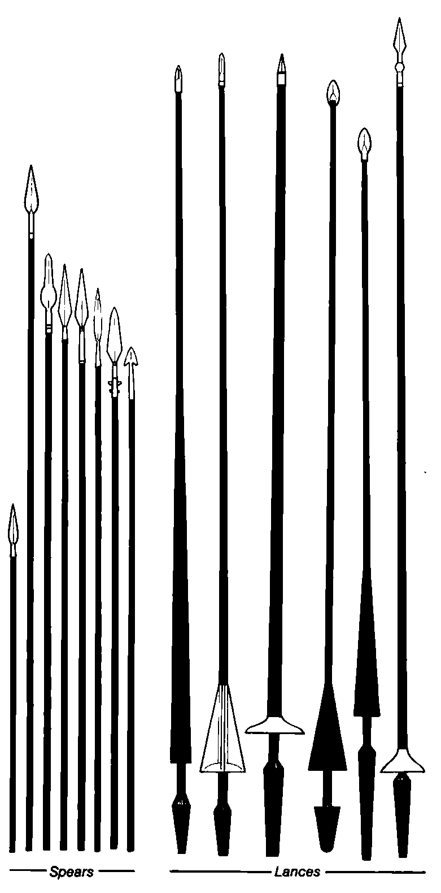
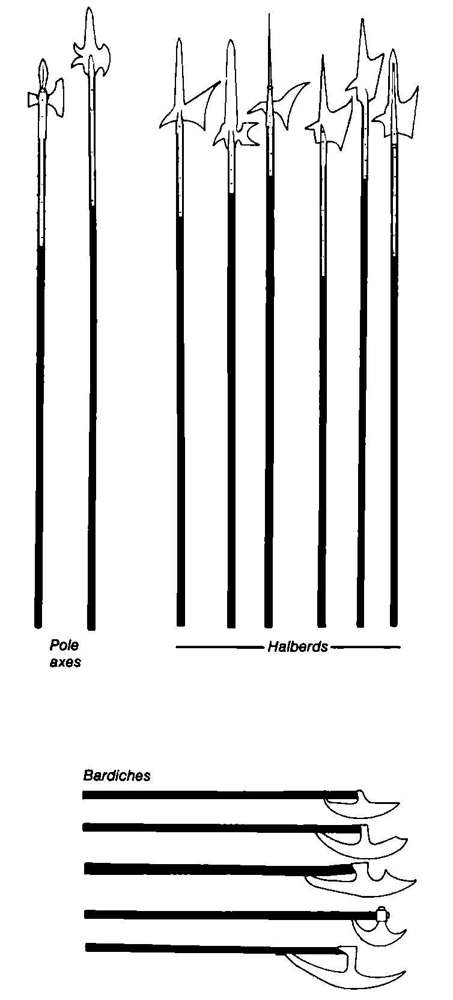
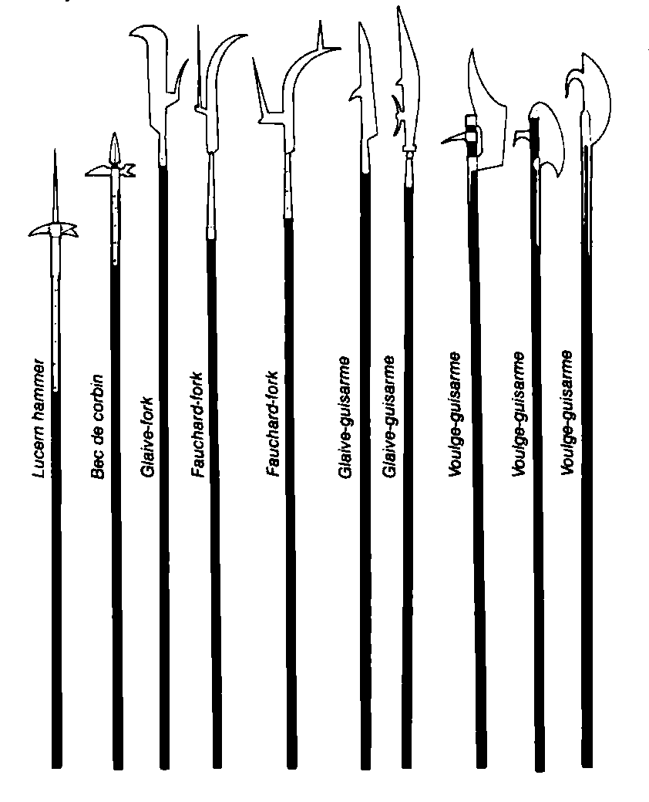

附录 · Appendices
附录 Q：无武器战斗 · Appendix Q: Weaponless Combat
角色可能因魔法（如笨拙术）或物理攻击（如鞭击）而失去普通武器。以下提供两套无武器战斗系统：第一套简易迅速，适合“紧急”情况；第二套由第一套发展而来，细节更多，也更强力。
系统 · System I: Simple Rules
本系统只适用于人类、半人类和类人生物相互战斗。目标身高不得超过攻击者身高的 125%：例如四英尺高者不能用本系统攻击超过五英尺的生物，六英尺高者只能攻击七英尺六英寸或更矮的生物。
进行无武器战斗时：
1. 攻击者选择拳击、擒抱或压制。 2. 按角色的标准命中几率进行命中检定，只用力量（如适用）修正。 3. 命中后由地下城主裁定所选行动的结果。防御者仍获得护甲、敏捷和魔法防护的所有适用益处。
拳击命中会使对手的行动延迟 1 分段，打断专注并使施法失败；伤害为 1–2 点，只有使用链甲手套等武器时才加力量奖励。同一轮多次成功拳击不会进一步延迟。
擒抱命中不造成伤害，但将对手控制 1 轮；被擒抱者被攻击时 +2，自己攻击时 −2。擒抱会在下一轮开始时自动解除。
压制命中不造成伤害，但会把对手撞倒。倒地者在站起前被攻击时 +4。
无武器战斗的先攻检定 −2。若角色在自己的无武器攻击前受到任何伤害，该次攻击即被打断，不能进行。
系统 II：详细规则
拳击 · Pummeling
任何有力量值（或被描述为具有某力量值范围）的生物都能拳击。玩家角色、大多数人类、巨人和吸血鬼可以拳击；大多数其他不死生物、龙及非类人生物不能。
目标必须是原生于主物质位面、非不死、非植物性的有机生物。蹒跚怪、元素、所有恶魔（半恶魔除外）、软泥和真菌生物不能被拳击。目标必须与攻击者同体型或更小；大型巨人可拳击 L、M、S 三种体型，半身人战士只能拳击 S 型目标。若目标倒地，则无论体型都可被拳击。
拳击的先攻 −4，另加敏捷修正。若拥有突袭优势或从背后攻击，则不受该罚值，且命中 +2。在攻击前受到目标伤害会使拳击失败，视为被逼退，无法完成这次挥击。
拳击结算顺序：
1. 确定用于拳击的物品类型； 2. 确定目标的暴露程度； 3. 对目标有效护甲等级进行命中检定； 4. 若命中，查拳击表确定击昏几率。
物品分为四类：
- 小型软物：赤手或脚；
- 小型硬物：链甲手套或剑柄；
- 大型软物：失去意识的角色；
- 大型硬物：桌子或椅子。
大型物体通常必须先花一轮捡起才能用于战斗。
目标暴露程度
若目标符合多个类别，按更易受伤的一类处理。
暴露：头部或脸部裸露；穿普通帽子或衣物；穿皮甲或软甲；天然护甲等级为 7 或更差。
半暴露：穿着防护值介于环甲和板甲之间的普通护甲；天然护甲等级介于 7 与 2 之间。
未暴露：穿野战板甲或全身板甲；天然护甲等级为 2 或更好。
盾牌和魔法护甲的加值不计入暴露程度。计算拳击的有效护甲等级时，忽略盾牌加值，除非是小圆盾或同样容易操持的物品；防御者仍获得魔法和敏捷加值。若使用护甲等级调整，将所有拳击视为使用“拳或空手”。
拳击表：击昏几率
下表数字是每 1 点力量的几率；力量达到 18/01 或更高时均按 18/01 计算。
| 目标状态 | 小型软物或大型软物 | 小型硬物 | 大型硬物 |
|---|---|---|---|
| 未暴露 | 无效果 | 每点力量 1%（18/01 时 20%） | 每点力量 2%（18/01 时 40%） |
| 半暴露 | 每点力量 1%（18/01 时 20%） | 每点力量 2%（18/01 时 40%） | 每点力量 4%（18/01 时 75%） |
| 暴露 | 每点力量 2%（18/01 时 40%） | 每点力量 4%（18/01 时 75%） | 每点力量 5%（18/01 时 95%） |
例如，力量 15 的战士攻击穿软甲的人，赤手命中后有 30% 几率击昏；用匕首柄则为 60%；用附近的椅子则为 75%。
被击昏者持续 1–10 分段，期间不能行动；正在施展的法术会丢失，专注被打断。已经击昏的目标再次被击昏，会昏迷 1–4 轮。击昏者失去敏捷和盾牌防御，并且被攻击时 +4。
小型软物造成 1–2 点伤害，小型硬物 1–3 点，大型物体均造成 1–4 点；无论是否击昏都如此。用来拳击的武器不按通常方式挥舞，因此使用上述伤害。
职业特例：僧侣拳击不受先攻罚值影响，并可进行拳击或空手攻击；盗贼（包括杂技盗贼和刺客）从背后拳击时命中 +4。杂技盗贼可将翻滚攻击百分比加到自己的击昏几率，最高 95%；翻滚时可从攻击者的击昏几率中减去自己的翻滚防御百分比。骑士（包括圣武士）赤手拳击时命中 −2，因为他们不习惯这种粗野的打法。
踢击使用赤脚（小型软物）或金属靴（小型硬物）。同体型目标只计算腰部以下的护甲；目标体型更小时，按全身最易受伤部位计算。能跳跃的角色（僧侣、杂技盗贼、野蛮人）可踢同体型目标的任何部位；攻击者处于更高位置时也可踢防御者的任何部位。
投掷物体可用于拳击：小型物体最远 30 英尺，大型物体最远 10 英尺。命中按远距离飞射攻击处理（−5），并加投掷者的力量修正。投掷物未命中时，按类手榴弹飞弹处理散射。
擒抱 · Grappling
任何有理智且能设法约束对手的生物都可擒抱。非实体生物、存在于星界或以太位面的生物、无智软泥与胶质生物都不能擒抱；眼魔或手脚被捆住的兽人也不能擒抱。擒抱用于限制目标行动，或使其更容易受到其他攻击。攻击者体型小于目标时不能擒抱，除非目标已倒地。
擒抱按普通攻击处理，先攻 −1。本轮擒抱前若攻击者受到伤害，该次擒抱失败。步骤为：确定防御者有效护甲等级，再进行命中检定。
擒抱时忽略盾牌和魔法护甲加值，因为攻击通常针对手脚而非厚重护甲保护的部位；魔法戒指、防护物品、护腕和魔法板甲的加值仍计入。
成功擒抱不造成伤害，但目标本轮不能再行动；目标攻击时 −2，被随后攻击时 +2，且在被控制期间失去敏捷奖励。
擒抱可通过以下方式解除：攻击者放手；目标攻击并造成伤害（该攻击命中 −2，而擒抱者保留适用的魔法与敏捷护甲加值）；目标在下一轮以无罚值成功反擒抱。反擒抱可使目标脱身，但不会伤害原擒抱者；原擒抱者获得魔法、敏捷加值，并获得等同其优势力量命中奖励的护甲加值（力量 17 即使护甲提高一级）；目标成功掷“弯杠”检定；或杂技盗贼以翻滚逃脱，几率等于其闪避百分比。
被擒抱的角色若有人能正常搬动，可在拳击中作为大型软物使用。
对多重攻击生物擒抱时，只能阻止一种独立攻击；例如擒抱大型蝎子只能封住一只螯或尾刺，其他攻击仍可进行。同一武器进行多次攻击（如高等级骑士）则一次擒抱即可全部封住。
相同能力的一群生物一起擒抱时只掷一次生命骰，第一名之外每名攻击者命中 +2。目标为 S 时，最多 3 名 S、1–2 名 M 或 1 名 L；目标为 M 时，最多 3 名 M 或 1–2 名 L；目标为 L 时，最多 3 名 L。倒地目标可被最多 8 名 S、6 名 M 或 4 名 L 擒抱。
压制 · Overbearing
任何生物都可压制另一个生物，但目标必须有可辨识的直立姿势；紫虫或凝胶立方体等几乎无法被压制。成功会使目标倒地。
压制按普通攻击处理，不改变先攻。攻击者在本轮攻击前受伤会使该次压制失败。压制本身不造成伤害，但若发生在燃烧油池或坑边，环境可能造成伤害。倒地者被攻击时 +4，攻击时 −2，且即使体型更大也能被擒抱或拳击。
确定有效护甲等级时，所有防御加值都计入；还要按体型和腿数调整：
| 防御者 \ 攻击者 | S | M | L |
|---|---|---|---|
| S | 0 | +2 | +4 |
| M | −4 | 0 | +2 |
| L | −8 | −4 | 0 |
腿数调整：4 条腿 −6，6 条腿 −8，超过 6 条腿 −10。没有腿的生物不能被压制。超过 4 条腿的大型生物倒地后下一轮自动起身，并可在该轮采取其他行动。
相同能力的一群生物一起压制时只掷一次骰，第一名之外每名参与者使结果 +1。不同生物一起压制时也只加 +1，但使用最弱生物类型的命中数。
目标为 S 时，最多可由 6 名 S、4 名 M 或 2 名 L 压制；目标为 M 时，最多 8 名 S、6 名 M 或 4 名 L；目标为 L 时，最多 12 名 S、8 名 M 或 6 名 L。
附录 R：非致命战斗 · Appendix R: Non-Lethal Combat
制服 · Subdual
制服适用于智力至少低等、但不超过天才程度的生物，包括龙及类似生物（石化蜥蜴、飞龙、龙兽），以及巨人、双头巨人、熊地精和其他非魔法的 L 型类人生物。其他生物是否能被制服由地下城主决定；原生于主物质位面以外的生物，除非在其本土位面，否则不能被制服。玩家角色永远不能被制服。
攻击者必须用武器的平面、尾端、柄、剑柄或其他非致命部位攻击。若有人造成全额伤害或使用造成伤害的法术，之前记录的所有制服效果都会被抵消。
制服伤害与真实伤害分开记录，其中 75% 为暂时伤害、25% 为真实伤害。对石巨人造成 40 点制服伤害，只有 10 点是真实伤害。当制服伤害超过生物的总生命值时，它就被制服；之后除自卫外不会攻击。此处规则取代早期关于制服（尤其是制服龙）的材料。
被制服的怪物不会继续攻击制服它的队伍。若被捕获，它会暂时服从，但会寻找逃跑机会；若捕获者比它弱，还会反过来攻击。只要队伍保持明显优势，制服状态就会持续。
征服 · Vanquishing
征服是骑士、圣武士、僧侣及其他守序生物以“荣誉决斗”解决争端的战斗形式。必须由一方发起挑战，另一方接受；双方须是能理解彼此语言、能够交流并自愿同意战斗的有理智生物。
战斗照常进行，但双方只将造成伤害的 四分之一计为真实伤害；双方都收住足以致死的攻击，以更高超的武器技艺证明胜负。任一方都可在一轮开始时改用真实战斗；来自对手或第三方的任何全额真实伤害都会使征服失效，之后双方正常攻击。暂时损失的生命值忽略；毒刃、斩首剑及具有自动效果的武器按真实战斗处理。
征服伤害与真实伤害分开记录。一方降至 0 生命值时败北，必须立即荣誉投降；若同一轮双方都降至 0，则为平局。
胜者可向败者要求一项服务或一件物品，例如暂时离开该地区、传话、做一件小事，或歌颂胜者的武勇；也可索取败者的一件武器、护甲或盾牌（包括魔法物品），或价值不超过败者生命骰／等级 × 1,000 金币的财宝。企图奴役或杀死已征服的对手，会使对手不再受义务约束；若胜者在最初挑战时已声明，也可以将对手囚禁。
守序生物败北后，除非要求在道德上违背其阵营，否则必须遵守胜者条件。善良生物不能被要求作恶；中立生物会根据对手力量和败北程度决定是否履约；混乱生物完全不受约束，混乱邪恶者甚至会诱使对手放松防备后反击。
征服通常只在两名战士之间进行。多人战斗也可以进行，但必须将一方全体成员的生命值降至 0 才能宣告胜利。征服伤害降至 0 的人仍可继续战斗，但之后受到的伤害均为完整正常伤害；多人征服中降至 0 生命值的角色通常可无损荣誉地退场（若其一方败北，则败方身份另论）。征服常用于不容突然死亡破坏庆典的比武和决斗，也用于僧侣、德鲁伊以战斗晋升，以及守序社区拘捕罪犯受审。
卸除武器 · Disarming
只有战士、骑士及其子职业成员可以卸除武器。以下武器按长度排列，可用于卸除：小刀、匕首、骑兵钉头锤、短剑、步兵钉头锤，以及阔剑、长剑、弯刀或 khopesh。
\* khopesh 在正常使用时本就有卸除武器的机会；若主动以卸除为目的，则使用本节规则。
使用者必须是战士或骑士，且熟练使用手中武器；目标也必须使用上列武器之一。需要双手使用的武器不能被此规则影响。
卸除不造成伤害；若命中，防御者必须进行对抗石化的豁免，否则武器被精湛剑术挑落。只能对长度相同或更短的武器卸除：匕首可卸小刀，弯刀可卸钉头锤，但匕首不能卸短剑。
被卸下的武器若与发动卸除攻击的武器同尺寸，会落在原主人的脚边；若它比发动卸除攻击的武器小，则会落在 1–10 英尺外。原持有者下一轮必须花时间取回武器、拔出另一件武器，或进行无武器战斗。建议只有在战役采用更详尽的无武器战斗系统 II 时，才使用这种非致命战斗形式。
附录 S：非人类神祇 · Appendix S: Non-Human Deities
以下 13 页材料由 Roger E. Moore 撰写，最初刊登于《DRAGON》杂志第 58–63 期。本节作为《传奇与传说》（原名《神祇与半神》）中“非人类神祇”部分的补充。文中提及的若干主要神祇，可在《传奇与传说》中查阅。
附录 S：矮人与精灵神祇 · Appendix S: Dwarven and Elven Deities
矮人诸神 · Dwarven Deities
非人类神系中，矮人神系是最强大的神系之一；正如人类神系反映其人类崇拜者的性格与信仰，矮人神系也充分反映矮人的性格与信仰。描述矮人神系时，可以看出它与通常的人类宗教之间存在若干明显差异。
所有较高等的矮人神至少有普通矮人的两倍高，身高最高可达摩拉丁的 20 英尺。有些人类评论者说，这表明矮人对自己的身高怀有自卑情结；这种说法荒谬至极。更可能的解释是，它反映了矮人自己的自我重要感（从人类的角度看，或许略有夸张）。矮人拒绝把自己看作“次等种族”，而且确实有许多理由支持这样一种看法：矮人是最强大的种族之一，或许仅次于人类。较低等的矮人神通常比高等神矮小；半神大致与普通矮人等高；没有任何矮人神比铸魂者摩拉丁更高。
矮人宗教的另一个有趣方面，是他们使用的圣徽几乎总不是活物，而是工具、武器、山脉、矿物之类。这在很大程度上源自摩拉丁的一些教诲：矮人不得把任何其他种族置于自己之上；把动物作为圣徽，就等于说那个动物优于矮人。同样，摩拉丁说矮人不应崇拜彼此，因此没有矮人或矮人身体的一部分会被用作圣徽。矮人应为自己的成就感到骄傲，并尊重自己最初由之而来的大地；因此，工具、武器及类似物品被制作并用作宗教象征。
本文描述最常被接受的五位矮人神祇。摩拉丁通常是所有矮人神系的统治者（尽管他可能有多个不同名字），关于他的描述见《传说与学识》。还有许多矮人神与半神，其中一些可能拥有自己的位面或区域。每个矮人氏族的神系都可能不同于其他氏族的神系，因此地下城主完全可以自由设计自己的神系，无须担心与任何人的神系一致。
最后，关于矮人神的一些一般说明：所有矮人神都有两套魅力值，一套适用于矮人及其他矮人神，另一套适用于其他所有生物。正如矮人把自己视为独立的种族，矮人神通常也不参与其他神系的事务和交往（少数例外将在后文看到）。
矮人的大多数低等神与半神，分别关联战斗与战争、守护、大地、金属、工艺、火山与地震、火焰与熔岩、死者保护、医疗和力量。矮人神系中几乎没有，或完全没有掌管海洋、空气与大气现象（雨、云、星辰等）、植物与森林、喜剧、动物和混乱的神。
矮人偶尔也会崇拜其他神系的神。尤其是凯尔特神话中的哥布涅和希腊神话中的赫淮斯托斯，因为他们代表锻造与大地的力量，很受矮人青睐。
银须战神克兰格丁 · Clanggedin Silverbeard
战斗之父 Clanggedin Silverbeard；高等神 Greater god。
| 项目 | 数值 |
|---|---|
| 护甲等级 | −4 |
| 移动力 | 12″ |
| 生命值 | 375 |
| 攻击次数 | 2 |
| 伤害／攻击 | 3–36（+14） |
| 特殊攻击 | 对巨人造成双倍伤害 |
| 特殊防御 | 见下文 |
| 魔法抗性 | 50% |
| 体型 | L（17 英尺） |
| 阵营 | 守序中立 |
| 崇拜者阵营 | 所有阵营，尤其是战士（矮人） |
| 圣徽 | 交叉的两把战斧 |
| 位面 | 阿卡迪亚 |
| 牧师／德鲁伊 | 12 级德鲁伊 |
| 战士 | 17 级巡林客 |
| 魔法师／幻术师 | 10 级魔法师 |
| 盗贼／刺客 | 无 |
| 武僧／吟游诗人 | 6 级吟游诗人 |
| 灵能能力 | VI |
| 属性 | 力量 25（+7、+14），智力 20，感知 19，敏捷 20，体质 25，魅力 16（22），容貌 13（20） |
克兰格丁秃顶、长着银色胡须，居住在一座巨大的山堡中；山堡由最优秀的矮人战士之魂驻守。他教给矮人许多对抗巨人类的特殊方法，也把自己的知识与技艺传给了侏儒诸神。在关于他功绩的许多故事与传说中，矮人把克兰格丁描述成凶猛而坚定的战士：他从不在危险面前退缩，即使一切似乎都已失去希望，也拒绝投降；许多时候，他只以最微弱的优势赢得胜利。
克兰格丁最痛恨的敌人是格罗兰托尔（山丘巨人之神）及其信徒。巨人类生物攻击克兰格丁时，命中骰承受 −4，与凡人矮人的情况相同。在战斗最激烈时，克兰格丁喜欢歌唱，既为了扰乱敌人，也为了提高追随者的士气。
克兰格丁可以双手各持一把 +4 秘银战斧。他可以用任一只手把这些特殊战斧投掷到 100 码远；无论击中什么，伤害都与他亲手劈中目标时相同，并带有一切适用的命中与伤害加值。他穿着 +5 钢制链甲。克兰格丁虽然具有魔法施法能力，通常只用这些力量间接影响事件进程；只有当他在主物质位面的存在受到威胁时，才会在近战情况下使用魔法或法术装置。
财富与幸运之神维尔加丹 · Vergadain
财富与幸运之神 God of Wealth and Luck；高等神 Greater god。
| 项目 | 数值 |
|---|---|
| 护甲等级 | −5 |
| 移动力 | 18″ |
| 生命值 | 345 |
| 攻击次数 | 3/2 |
| 伤害／攻击 | 3–30（+10） |
| 特殊攻击 | 无 |
| 特殊防御 | 自动侦测所有陷阱 |
| 魔法抗性 | 70% |
| 体型 | L（10 英尺） |
| 阵营 | 中立（倾向混乱中立） |
| 崇拜者阵营 | 所有中立阵营，尤其是商人和盗贼（矮人） |
| 圣徽 | 金币 |
| 位面 | 协和对立界 |
| 牧师／德鲁伊 | 12 级德鲁伊 |
| 战士 | 12 级巡林客 |
| 魔法师／幻术师 | 无 |
| 盗贼／刺客 | 18 级盗贼 |
| 武僧／吟游诗人 | 15 级吟游诗人 |
| 灵能能力 | III |
| 属性 | 力量 22（+4、+10），智力 23，感知 20，敏捷 23，体质 25，魅力 18（24），容貌 18（24） |
矮人商人和大多数非邪恶矮人盗贼的守护神，是诡计多端的维尔加丹。他据说也是一位伟大的诗人，会把巨大宝藏所在位置的线索赐给崇拜者；这些线索通常隐藏在某种诗句或押韵中。他的吟游诗人才能还使他能够仔细判断宝藏真正的性质与价值。
维尔加丹看起来是一个穿棕色和黄色衣服的巨大矮人。衣服下穿着 +5 金色链甲，颈上戴一条项链，可以随意把身高从 1 英尺改变到 15 英尺。身旁的 +4 长剑在握住剑柄时，会侦测出他身边 2″范围内的所有宝藏。
维尔加丹的大多数冒险，都围绕他在试图赢得人类、半人类、类人生物和巨人所有有价值财产时所施展的精心骗局。他不惜使用任何诡计达到目的，也永远怀疑潜在对手会反过来欺骗他。因此，维尔加丹的追随者通常被视为可疑人物，很少有矮人愿意承认他是自己的神。若某位信徒对别人否认维尔加丹是自己的真正神祇，只要适当献祭仍然进行，维尔加丹不会因此生气。
山下秘藏守护者杜玛索因 · Dumathoin
山下秘藏守护者 Keeper of Secrets Under the Mountain；高等神 Greater god。
| 项目 | 数值 |
|---|---|
| 护甲等级 | −2 |
| 移动力 | 9″（48″） |
| 生命值 | 366 |
| 攻击次数 | 2 |
| 伤害／攻击 | 10–40（+14） |
| 特殊攻击 | 召唤元素生物 |
| 特殊防御 | 只有 +3 或更好的武器才能命中 |
| 魔法抗性 | 70% |
| 体型 | L（18 英尺） |
| 阵营 | 中立 |
| 崇拜者阵营 | 所有阵营（矮人） |
| 圣徽 | 山中的宝石 |
| 位面 | 协和对立界 |
| 牧师／德鲁伊 | 15 级牧师／14 级德鲁伊 |
| 战士 | 16 级战士 |
| 魔法师／幻术师 | 特殊／14 级幻术师 |
| 盗贼／刺客 | 12 级盗贼 |
| 武僧／吟游诗人 | 无 |
| 灵能能力 | V |
| 属性 | 力量 25（+7、+14），智力 23，感知 25，敏捷 20，体质 25，魅力 18（24），容貌 13（16） |
据说杜玛索因会隐藏大地的秘密，直到勤勉且配得的人准备好将其揭开。他是山地矮人的保护者，也是所有金属的守护者。他把铁、铜、金、银和秘银的矿脉埋在自己认为对信徒最有益、待他们发现的位置。杜玛索因从不曾开口说话，而是把智慧留给自己（不过，他可能会向敏锐的观察者发送关于世界本质的微妙线索）。
摩拉丁任命他为山地矮人的保护者后，杜玛索因创造了一个供山地矮人享受的“天堂”。矮人开始“破坏”他赐予他们的山脉时，他起初十分愤怒；但当他看到矮人用采出的矿石制作的精美金属物品时，愤怒转为喜悦。他的敌人是那些掠夺大地财富、出于不公平或自私目的将财富带走的人，无论他们是不是矮人。他并不反对在地下挖掘、采矿或保存宝藏。矿工把他视为自己的守护神，常在口袋里携带一颗价值 10 金币的小钻石或宝石，以吸引神的眷顾。
杜玛索因看起来是一个巨大的矮人，头发和胡须由灰色岩石构成，皮肤呈土褐色，双眼是银色火焰。他拥有一把由固化岩浆制成的 +5 双手镐。每天一次，他可以随意瞬间召唤 3–18 个 16 生命骰的土元素；它们会战斗至死。他还可以按 30 级能力施展所有与金属、大地或石头有关的魔法师法术，但不能施展其他魔法师法术。
与大多数矮人神不同，杜玛索因与非矮人神保持友好关系，不过这样的神不多。他最亲密的盟友之一是赫淮斯托斯，杜玛索因向他供应精金矿。其他金属工艺与大地之神，有时也会与杜玛索因及其代表交易金属和矿石。因此，这位神的牧师有时会参与销售金属及类似材料的商业活动。
贪婪大主宰阿巴索尔 · Abbathor
贪婪大主宰 Great Master of Greed；高等神 Greater god。
| 项目 | 数值 |
|---|---|
| 护甲等级 | 0 |
| 移动力 | 12″ |
| 生命值 | 330 |
| 攻击次数 | 2 |
| 伤害／攻击 | 2–24（+12） |
| 特殊攻击 | 见下文 |
| 特殊防御 | 无 |
| 魔法抗性 | 50% |
| 体型 | L（8 英尺） |
| 阵营 | 中立邪恶 |
| 崇拜者阵营 | 邪恶（矮人） |
| 圣徽 | 镶宝石的匕首 |
| 位面 | 哈迪斯 |
| 牧师／德鲁伊 | 无 |
| 战士 | 14 级战士 |
| 魔法师／幻术师 | 特殊／11 级幻术师 |
| 盗贼／刺客 | 20 级盗贼／15 级刺客 |
| 武僧／吟游诗人 | 无 |
| 灵能能力 | II |
| 属性 | 力量 24（+6、+12），智力 22，感知 16，敏捷 24，体质 24，魅力 8（14），容貌 7（13） |
阿巴索尔有时曾是其他矮人神的盟友，但他的背叛和贪宝欲使他成为危险的伙伴。他绝不会帮助任何非矮人神或非矮人生物；除非为了自己的目的而提供帮助，否则不能指望他做任何不邪恶的事。阿巴索尔并非一开始就如此执着于邪恶。最初，他掌管的是对珍贵宝石与金属的欣赏，不一定要以损害他人为代价。摩拉丁任命杜玛索因而不是他来保护山地矮人后，阿巴索尔变得愤懑；从那天起，他在行动中越来越诡诈、越来越只顾自己，持续试图通过让贪婪，尤其是邪恶的贪婪，成为矮人生活的驱动力来向其他神复仇。
据说他的居所洞穴由最纯的黄金构成；这可能是真实情况，也可能只是由他收藏珍贵物品的名声产生的传说。阿巴索尔的贪婪经常表现在行动中：只要他看见任何魔法物品，或价值超过 1,000 金币的宝藏，就会试图直接偷走，或杀死所有者后夺走它；两种情况各有 50% 的概率。
阿巴索尔穿着用过去反对过他的生物之皮和毛皮制成的皮甲。他使用一把钻石刃、刀柄镶宝石的 +5 匕首；匕首基础造成 2–24 点伤害，并能在 2″范围内侦测贵金属的种类与数量。除阿巴索尔之外，任何握住这把武器的人会立刻失去一个经验等级；匕首每持续被握住一轮，就再失去一个等级。
阿巴索尔还有一面盾牌，每轮可对 3″范围内的任意目标（一次一个）施展一次致盲术；目标的豁免骰承受 −6。他与维尔加丹维持着不安的停战，有时会和维尔加丹一起在主物质位面寻找更多宝藏。若偷窃某件物品时受挫，阿巴索尔会试图毁掉它，使自己不必被失败的记忆折磨。
安全、真理与家园之母贝罗纳尔 · Berronar
安全、真理与家园之母 Mother of Safety, Truth, and Home；高等女神 Greater goddess。
| 项目 | 数值 |
|---|---|
| 护甲等级 | −4 |
| 移动力 | 12″ |
| 生命值 | 370 |
| 攻击次数 | 2 |
| 伤害／攻击 | 6–36（+9） |
| 特殊攻击 | 见下文 |
| 特殊防御 | 见下文 |
| 魔法抗性 | 80% |
| 体型 | L（18 英尺） |
| 阵营 | 守序善良 |
| 崇拜者阵营 | 守序善良（矮人） |
| 圣徽 | 两枚银戒指 |
| 位面 | 七重天 |
| 牧师／德鲁伊 | 15 级牧师／12 级德鲁伊 |
| 战士 | 14 级圣武士 |
| 魔法师／幻术师 | 16 级魔法师 |
| 盗贼／刺客 | 无 |
| 武僧／吟游诗人 | 无 |
| 灵能能力 | III |
| 属性 | 力量 21（+4、+9），智力 25，感知 25，敏捷 20，体质 25，魅力 19（25），容貌 20（25） |
通常认为，最伟大的矮人女神是与摩拉丁一同居住在七重天、山下铸魂炉中的贝罗纳尔。贝罗纳尔被视为婚姻和爱情（但不一定是浪漫爱情）的守护者。人们常在家庭中的小型仪式里呼唤她的名字，请求她保护自己免受盗贼与欺骗。但贝罗纳尔并不是一个被动地待在家里的角色；她为保存和保护矮人文化与文明所作的努力，跨越了许多宇宙，所有性别的矮人都尊敬她的名字。
贝罗纳尔看起来是一个穿着+5 明亮银色链甲的巨大矮人。她的棕色胡须编成四股；若剪下一股，它会在一天内重新长出，而在这一天结束时，被剪下的那绺头发会变成价值 10,000–40,000 金币的黄金。她有时会把自己的发绺赐给极度贫困、处境艰难、无法在经济上重新站稳脚跟的矮人社群。当然，这种情况极其罕见，而且必须由该聚落中等级最高的守序善良矮人牧师请求。若这批黄金或其中任何一部分被用于非善良目的，黄金会全部消失。
贝罗纳尔挥舞一把黄金与钢制成的 +4 钉头锤，接触即可杀死邪恶盗贼和所有刺客；目标对死亡魔法的豁免骰承受 −4。她戴着两枚力量强大的银戒指：其中一枚防止 10″内任何人明知故犯地说假话；另一枚使同一范围内的凡人无法使用任何盗贼能力，除非他们每轮尝试使用该能力时都能以 −2 通过法术豁免。
矮人有交换戒指的习俗，用来交换彼此特殊的信任与爱情；这与人类在婚礼仪式中使用的习俗独立地相似。矮人不会轻易举行这种仪式，除非情况极其特殊，几乎从不与非矮人交换；双方都必须是守序善良。传说贝罗纳尔启发了这种习俗，矮人各地还发展出若干变体。守序善良的矮人战士若为某个目的向贝罗纳尔求助并献上足够丰厚的祭品，有 5% 的概率获得与自身等级相同的圣武士能力，持续 3–6 天。只有心地极其纯洁的矮人会被考虑授予这种荣誉；任何人每 10 年最多获得一次。
精灵诸神：塞尔达林 · Seldarine
精灵神系主要位于奥林匹斯的一个位面上，那里有一片被称为阿凡多（“高林”）的区域。大量精灵神祇居住于此；它们合称塞尔达林，这个词大致可译为“森林兄弟姐妹的联会”。这个称号也暗示了能力和兴趣领域的极大多样性，而把它们联系在一起的，是合作的意愿。尽管许多神祇的影响范围在某种程度上彼此重叠，它们之间并不存在冲突。在所有塞尔达林成员中，只有科瑞隆·拉瑞辛是高等神。
塞尔达林几乎无一例外都具有混乱、中立和／或善良的性情。没有一个是邪恶的，守序的最多只有极少数（两三个）。它们大多独立行动，但会因爱、好奇、友谊、为了合力完成某项任务，或因为外来威胁而聚集在一起。科瑞隆·拉瑞辛是其中最强大的存在；他强化这种行动自由，从不强迫任何成员执行任何任务。相反，它们似乎能感知何时有事情需要完成，并会自动召集其中几位（如果需要不止一位）共同完成。
精灵神祇及其宗教之间存在一些有趣的相似之处。所有宗教都容忍塞尔达林内部的其他信仰，也容忍少数关系密切的宗教（林中猎手斯凯里特的崇拜就是一个典型例子）。这些宗教大多还强调精灵与生命、自然的统一，往往模糊精灵与其环境之间的界限。叶主里里法恩·拉拉希尔既是“一棵巨大的以太橡树”，也是“一名身披树皮护甲的绿肤精灵”。深海之王萨沙拉斯的皮肤呈海绿色，映照着他的栖息地；天空女神艾德莉·费恩娅通常被描绘成深蓝色，如同她所统治的天空。这些神祇使用的武器、工具和护甲，通常被视为神祇本身的延伸，有时甚至是真正的身体部分。自然与魔法力量的主题，也极其频繁地出现在精灵神话与宗教故事中。
精灵神祇以精灵形态出现时，通常身高在 4 英尺至 8 英尺之间，只有少数例外超过或低于这个范围。许多神祇还能够在非精灵的自然形态下呈现大得多的身形。里里法恩化身为橡树，萨沙拉斯化身为巨大、高耸而略带人形的海水巨浪，艾德莉化身为白云，以及科瑞隆罕见地化身为蔚蓝色月亮或星辰，都是这种情况的例子。
邪恶精灵与塞尔达林的神祇毫无关系。他们往往觉得恶魔王子、魔鬼大公和下层位面的其他存在更合自己的心意。邪恶精灵通常是混乱的，因此深渊诸主获得了其中大多数的崇拜。蜘蛛与蛛类的恶魔女王罗丝，就是从邪恶精灵，尤其是卓尔的崇拜中获取大量力量的低等神祇的著名例子。小型精类生物，如妖精、皮克精等，也有自己的神祇（通常是半神等级）照料它们的需要。根据其信徒的总体阵营，这些半神可能位于几个不同的位面，但通常都与塞尔达林结盟。
半精灵可以崇拜塞尔达林中的任何神祇。他们作为玩家角色时，也可以在适用的情况下成为这些神祇的牧师或德鲁伊。相当多的半精灵会尊崇浪漫与美之女神哈娜莉·塞兰尼尔，以纪念将他们带到世上的双亲之间的爱情（如果确实是这种爱情）。
塞尔达林的其他众多成员，对精灵、自然、魔法、舞蹈与游戏、爱情、美、时间、天象、流水、武器技巧、工艺、秘密、喜剧与欢乐、混乱和恶作剧等领域拥有不同程度的控制力。几乎没有神祇代表法律、地下现象、无缘无故的暴力、战争，以及非哺乳类或非鸟类生命形式。一两位神祇关注死亡与濒死，但它们是和平而善良的神祇，不是人类神系中常见的黑暗邪恶类型。不同地方的精灵神系会有很大差异，因为塞尔达林的不同成员可能在当地取得重要地位，也可能逐渐被遗忘。
下面描述塞尔达林中五位更强大、受崇拜更广泛的神祇。由于精灵神祇的种类如此繁多，这些特定神祇很可能不会出现在某位地下城主的宇宙中；此前提到的其他神祇则会在那里存在。
空气与天气女神艾德莉·费恩娅 · Aerdrie Faenya
空气与天气女神 Goddess of Air and Weather；次等女神 Lesser goddess。
| 项目 | 数值 |
|---|---|
| 护甲等级 | −5 |
| 移动力 | 48″（仅飞行） |
| 生命值 | 322 |
| 攻击次数 | 2 |
| 伤害／攻击 | 6–20 |
| 特殊攻击 | 否定飞行 |
| 特殊防御 | 免疫飞弹武器 |
| 魔法抗性 | 80% |
| 体型 | M（6 英尺） |
| 阵营 | 混乱善良（倾向中立） |
| 崇拜者阵营 | 见下文 |
| 圣徽 | 带鸟形剪影的云 |
| 位面 | 奥林匹斯与格拉德斯海姆 |
| 牧师／德鲁伊 | 14 级德鲁伊 |
| 战士 | 10 级战士 |
| 魔法师／幻术师 | 特殊／无 |
| 盗贼／刺客 | 无 |
| 武僧／吟游诗人 | 10 级吟游诗人 |
| 灵能能力 | VI |
| 属性 | 力量 8，智力 24，感知 22，敏捷 24，体质 19，魅力 23，容貌 25 |
艾德莉看起来是一名高大的精灵般女子，头发与眉毛都像羽毛；一对巨大的鸟类翅膀从她背后伸出。她的羽毛不断改变颜色。她身体从臀部以下的部分消失在雾状旋风中，因此看起来永远不会接触地面。艾德莉在奥林匹斯与格拉德斯海姆的风中漫游，身边跟随着大量不同种类的有翼生物。
若被激怒而进入战斗，艾德莉每轮能够施放两股强大的风爆，对她 96″ 内的任何对手各造成 5–20 点伤害。她每天还可以召唤一次 2–12 个 16 HD 的空气元素，并且每天两次召唤 3–18 只巨鹰或 1–2 只巨鹏。这些生物会服从她至死。
这位女神能够以 25 级能力使用所有涉及空气、天气、飞行、电和气体的魔法师法术；她可以随意使用，每轮一个法术。她还可以随意否定她 12″ 内任何生物的飞行或悬浮能力。
任何非守序且非邪恶阵营的精灵都可以崇拜艾德莉。希望获得特定天气状况的精灵最常向她献祭；拥有飞行坐骑（狮鹫、鹰马、飞马等）的精灵也很喜欢她的教派。曾有这样的情况：某个精灵角色从高处坠落，在撞地前大声呼喊艾德莉的名字，于是有小小的 2% 几率在即将落地前获得一个羽落术。不过，直接从艾德莉本人得到这项恩惠的精灵，会在接下来的 2–7 天内被赋予任务并施加胁迫（不允许豁免），去为女神完成一项与角色总体能力等级完全相称的服务。这类任务性质各异，但都被认为相当具有挑战性和困难。得到这项羽落术恩惠（以及其后果）的精灵不必是艾德莉的崇拜者，但阵营应与她相同。
恶作剧与变化之神艾瑞万·伊勒塞尔 · Erevan Ilesere
恶作剧与变化之神 God of Mischief and Change；次等神 Lesser god。
| 项目 | 数值 |
|---|---|
| 护甲等级 | −1 |
| 移动力 | 18″ |
| 生命值 | 290 |
| 攻击次数 | 1 |
| 伤害／攻击 | 2–24（+7） |
| 特殊攻击 | 见下文 |
| 特殊防御 | 只有 +2 或更好的武器才能命中 |
| 魔法抗性 | 85% |
| 体型 | S 至 M（见下文） |
| 阵营 | 混乱中立 |
| 崇拜者阵营 | 所有混乱阵营者和盗贼（精灵） |
| 圣徽 | 射线不对称的新星 |
| 位面 | 奥林匹斯 |
| 牧师／德鲁伊 | 8 级德鲁伊 |
| 战士 | 7 级巡林客 |
| 魔法师／幻术师 | 无／18 级幻术师 |
| 盗贼／刺客 | 20 级盗贼 |
| 武僧／吟游诗人 | 10 级吟游诗人 |
| 灵能能力 | III |
| 属性 | 力量 19（+3、+7），智力 23，感知 16，敏捷 25，体质 20，魅力 24，容貌 25 |
虽然他的信徒不像其他精灵神祇的信徒那样多，埃瑞万仍然受到精灵相当程度的关注，尤其是从事盗窃活动的精灵。他是一位反复无常、完全不可预测的神祇，可以随意改变自己的外表。他喜欢为了制造麻烦而制造麻烦，但他的恶作剧很少有帮助，也很少致命。他最喜欢的策略，是把身高改变成 1 英寸至 6 英尺之间的任意尺寸。不管他在某一时刻呈现什么外表，身上总会有绿色。
旅行时，埃瑞万携带一把 +4 长剑，只需一触就能打开所有障碍、门和锁。只要他愿意，还可以召唤最多 20 只妖精、精灵、皮克精或其他矮小而淘气的精类生物；每一只都拥有最大生命值，以便在特定情况下提供帮助。埃瑞万很少直接与其他生物战斗，更喜欢逃走，并在之后寻找机会让对手措手不及。不过，他可以随意每轮施放一次混乱术或任意变形术。在进入战斗之前，他很可能会大量利用这些法术为自己谋利。
埃瑞万的追随者通常也同样难以预测，并且非常独立。他们中的许多人是盗贼，或把盗贼作为多职之一。有人见过精灵牧师／盗贼和战士／牧师／盗贼出现在他的崇拜者中，这些职业组合通常不为精灵所允许。这些多职角色始终是非玩家角色。
弓箭与狩猎之神索洛诺尔·塞兰迪拉 · Solonor Thelandira
弓箭与狩猎之神 God of Archery and Hunting；次等神 Lesser god。
| 项目 | 数值 |
|---|---|
| 护甲等级 | −2 |
| 移动力 | 15″ |
| 生命值 | 308 |
| 攻击次数 | 4 |
| 伤害／攻击 | 2–16 |
| 特殊攻击 | 斩杀箭 |
| 特殊防御 | 见下文 |
| 魔法抗性 | 85% |
| 体型 | M（7 英尺） |
| 阵营 | 混乱善良 |
| 崇拜者阵营 | 所有善良和中立阵营的猎人及战士（精灵） |
| 圣徽 | 绿色羽饰的银箭 |
| 位面 | 奥林匹斯 |
| 牧师／德鲁伊 | 12 级德鲁伊 |
| 战士 | 17 级巡林客 |
| 魔法师／幻术师 | 10 级魔法师 |
| 盗贼／刺客 | 12 级盗贼 |
| 武僧／吟游诗人 | 8 级吟游诗人 |
| 灵能能力 | VI |
| 属性 | 力量 21（+4、+9），智力 22，感知 21，敏捷 25，体质 21，魅力 23，容貌 22 |
索洛诺尔披着一件由活叶组成的大斗篷，穿过森林寻找猎物并搜寻、消灭邪恶。他唯一的武器是一把 +5 长弓，射程远至地平线。索洛诺尔不会靠近敌人战斗，而是追踪并追猎对方，用一支永远不会射空的箭袋射击。由于感觉极其敏锐，他不会被 48″ 内的任何生物突袭。
如果预料到要与特别危险的敌人交战，这位神祇最喜欢的战术是亲手触摸该生物，然后撤退。等他再次独处时，就能制造一支专门设计来杀死那个对手的斩杀箭，只要命中即可。这种箭能够杀死任何不具有半神地位的预定目标。许多恶魔、魔鬼和下层位面的其他怪物都尝过这种飞弹的滋味；即使它们的魔法抗性，也无法保护它们免于某些确定的死亡。制造一支这种 +3 箭需要一天。
穿过森林时，索洛诺尔会自动隐形（如同幻术师四级法术高级隐形术），并且完全无声。他把躲藏在自然植被中、穿过自然植被而不被发现的技艺教给了最初的精灵。精灵猎人和战士经常崇拜索洛诺尔·塞兰迪拉，并请求他帮助自己获得更好的猎获。若某位崇拜者以极其非凡的方式证明自己，有 2% 的几率得到一支普通的斩杀箭，其设计目标是杀死该精灵当时最强大的敌人类型。这份礼物一生只能获得一次。
浪漫爱情与美之女神哈娜莉·塞兰尼尔 · Hanali Celanil
浪漫爱情与美之女神 Goddess of Romantic Love and Beauty；次等女神 Lesser goddess。
| 项目 | 数值 |
|---|---|
| 护甲等级 | −4 |
| 移动力 | 12″ |
| 生命值 | 312 |
| 攻击次数 | 无 |
| 伤害／攻击 | 无 |
| 特殊攻击 | 魅惑灵气 |
| 特殊防御 | 见下文 |
| 魔法抗性 | 95% |
| 体型 | M（5½ 英尺） |
| 阵营 | 混乱善良 |
| 崇拜者阵营 | 善良和中立阵营（精灵），以及享受美或处于恋爱中的人 |
| 圣徽 | 黄金之心 |
| 位面 | 奥林匹斯 |
| 牧师／德鲁伊 | 14 级牧师／10 级德鲁伊 |
| 战士 | 无 |
| 魔法师／幻术师 | 16 级魔法师／15 级幻术师 |
| 盗贼／刺客 | 无 |
| 武僧／吟游诗人 | 12 级吟游诗人 |
| 灵能能力 | VI |
| 属性 | 力量 15，智力 23，感知 23，敏捷 25，体质 20，魅力 25（特殊），容貌 30 |
哈娜莉·塞兰尼尔主要以女性形象出现，不过据说她很少也会以男性形象出现。哈娜莉影响爱情与美的领域，受到许多精灵广泛尊崇。她拥有一个巨大的水晶喷泉与水池，仿佛使用水晶球一样借此监视她的信徒。当她在这座水池（被称为“永金”）的水中沐浴时，她的魅力值会提高一天；在这段时间里，她会获得 +75% 的反应奖励，并使最高 14 级的角色产生敬畏。不过，这些加值只对精灵和半精灵有效。
阿佛洛狄忒女神（其描述见《传说与学识》）是唯一与哈娜莉共享永金池水域的其他存在，她对人类也能获得上述同样的加值。由于她们分别面向不同种族，这两位女神很少发生冲突。她们各自的教派与追随者虽然很少互相帮助，却也不反对彼此存在。
哈娜莉本身没有物理攻击方式，但拥有半径 6″ 的魔法灵气；灵气范围内的任何生物每轮都必须以 −4 通过法术豁免，否则会永久受到她的美貌魅惑。这位女神只能被持有 +2 或更好武器且拥有负魅力值（−1 至 −7）的生物攻击；见《传说与学识》。其他所有生物都会因她的存在而分心，每一次命中都会失手。
崇拜哈娜莉·塞兰尼尔的精灵一生中可以有一次机会，获得相对于异性的 2 点魅力提升。例如，一名获得这项恩赐的女性精灵，可能使自己原本的 14 点魅力只适用于与其他女性交往；所有男性都会把她视为拥有 16 点魅力。这种效果是永久性的。在崇拜者完成一项伟大任务后，获得这项恩赐的几率为 5%。这项任务可能涉及创造或保存一件美丽的物品，或为了所爱之人的名义、为了所爱之人的利益而完成伟大的行为。
长生之神拉贝拉斯·恩诺瑞斯 · Labelas Enoreth
长生之神 God of Longevity；次等神 Lesser god。
| 项目 | 数值 |
|---|---|
| 护甲等级 | −3 |
| 移动力 | 12″ |
| 生命值 | 370 |
| 攻击次数 | 1 |
| 伤害／攻击 | 见下文 |
| 特殊攻击 | 见下文 |
| 特殊防御 | 见下文 |
| 魔法抗性 | 93% |
| 体型 | M（6 英尺） |
| 阵营 | 混乱善良 |
| 崇拜者阵营 | 混乱善良（精灵） |
| 圣徽 | 落日 |
| 位面 | 奥林匹斯 |
| 牧师／德鲁伊 | 14 级牧师／12 级德鲁伊 |
| 战士 | 无 |
| 魔法师／幻术师 | 18 级魔法师／16 级幻术师 |
| 盗贼／刺客 | 无 |
| 武僧／吟游诗人 | 12 级吟游诗人 |
| 灵能能力 | VI |
| 属性 | 力量 12，智力 25，感知 25，敏捷 19，体质 18，魅力 24，容貌 25 |
与科瑞隆·拉瑞辛一样，拉贝拉斯·恩诺瑞斯时而以男性、女性，有时甚至以两者皆是或两者皆非的形象出现。不论性别如何，拉贝拉斯总有银色头发和朦胧的灰色眼睛。这位神祇穿着绿色、蓝色、白色和灰色的浅色长袍。在精灵种族被创造时，拉贝拉斯赐予他们长寿，并宣告时间流逝对他们的外貌几乎没有影响，不像对其他种族那样。拉贝拉斯知道每一名精灵及所有与精灵有关的生物的未来与过去。
精灵承认拉贝拉斯·恩诺瑞斯是时间与老化的主宰。每轮一次，只要他把目光固定在 12″ 内的任何生物上，就能使该生物陷入时间停滞（无豁免），持续任意长时间。他触摸任何生物时，可以使其恢复青春，或使其过早老化，最多改变 100 年（可进行法术豁免）。在生物一生中，这项能力只能对它使用一次，无论选择哪一种形式。
拉贝拉斯选择时，18″ 内所有作为他敌人的凡人会自动变慢；同一范围内、与这位神祇结盟的所有凡人则会自动加速。对此能力没有豁免，但魔法抗性可能有效。拉贝拉斯本人免疫任何涉及时间，或会限制其移动的法术或类似效果（时间停止、时间停滞、迟缓、麻痹、定身等）。
崇拜这位存在的精灵可以请求他消除老化的影响，但这很少会被批准（几率 1%），并且只有完成过以他的名义进行的杰出任务者才有机会。此类任务应由地下城主设计，通常涉及找回遗失数百年或数千年的神器与遗物。拉贝拉斯的追随者通常是历史学家，或是收集精灵种族过去历史资料的其他类型的人。
附录 S：侏儒与兽人神祇 · Appendix S: Gnomish and Orcish Deities
侏儒诸神 · Gnomish Deities
半人类神系中，成员最少的很可能是侏儒神系。按大多数统计，统治侏儒族的神祇只有六七位，不过其他宇宙中可能还有更多。除“地下爬行者”乌尔德伦外，所有侏儒神都由加尔·闪金统领（见《传说与学识》）。除一位之外，它们都居住在双重乐园的一个位面上，那里有一片称为黄金丘陵的区域；虔诚侏儒的灵魂死后会前往那里。例外仍然是乌尔德伦，他居住在深渊。
侏儒神祇完全关心侏儒种族的命运，并且经常亲自冒险，以支持自己的事业，防止敌人压倒侏儒。所有已知侏儒神都是男性，但男性和女性侏儒对它们怀有同等敬意。它们没有人们可能想象的全男性神系应有的“男子汉”形象，而是聪明、理智并乐于助人。乌尔德伦没有性别（虽然仍以“他”称呼），不具备这些善良品质；不过，“他”的少数追随者仍然可以是男性或女性。
侏儒神几乎总是至少有一名伙伴，可以是武器、动物或另一位神祇，在任务中陪伴它们。加尔有他的智能战斧阿伦迪娜；巴文有他的浣熊朋友奇克提卡；塞戈扬有时由一具智能石魔像陪伴，等等。乌尔德伦再次成为例外，他没有朋友。由于侏儒高度重视伙伴，神系不可避免地反映了这一特征。侏儒神通常只与其他侏儒神来往，不过有时也与少数矮人神保持松散联系。
恶作剧和实用玩笑，是侏儒神回应敌人的主要方式。它们经常间接对付敌人，但如果情况足够严重，也完全能够主动出击并直接参战。与其他非人类神系相比，侏儒神系是最积极、最介入信徒生活的神系之一。
森林侏儒巴文·野游者 · Baervan Wildwanderer
“森林侏儒” The Forest Gnome；次等神 Lesser god。
| 项目 | 数值 |
|---|---|
| 护甲等级 | 1 |
| 移动力 | 15″ |
| 生命值 | 295 |
| 攻击次数 | 3/2 |
| 伤害／攻击 | 2–24（+6） |
| 特殊攻击 | 见下文 |
| 特殊防御 | 只有 +2 或更好的武器才能命中 |
| 魔法抗性 | 20% |
| 体型 | S（4 英尺高） |
| 阵营 | 中立善良 |
| 崇拜者阵营 | 所有善良和中立阵营（侏儒） |
| 圣徽 | 浣熊脸 |
| 位面 | 双重乐园或主物质位面 |
| 牧师／德鲁伊 | 12 级德鲁伊 |
| 战士 | 8 级巡林客 |
| 魔法师／幻术师 | 13 级幻术师 |
| 盗贼／刺客 | 20 级盗贼 |
| 武僧／吟游诗人 | 无 |
| 灵能能力 | II |
| 属性 | 力量 18/00（+3、+6），智力 21，感知 19，敏捷 25，体质 22，魅力 22，容貌 16 |
在善意恶作剧领域，巴文·野游者这位森林侏儒是加尔·闪金最接近的竞争者。虽然他缺少加尔的灵巧和专注，但在盗贼技巧的实际运用上略胜一筹。他穿着木棕色调的服装，携带一把由双重乐园中的古老橡树制成的 +3 长矛，这棵树名为“耳语叶”。如果长矛被毁，巴文可以在一天内用耳语叶的木材重新制造一把。只有他能安全接近这棵树；它会攻击其他所有生物（按最大体型和最大生命值的树人处理）。耳语叶会在一小时内再生所有失去的木材。
战斗中，巴文可以用他的特殊长矛触碰一棵普通树，使它自动活动 5–20 回合，成为一棵 12 生命骰的树人。树人只服从巴文的命令，在活动期间不服从任何其他人的命令。巴文可以随意使用这一能力，每轮活动一棵树。
巴文有一名旅行伙伴，是一只名为快爪奇克提卡的巨型浣熊。它非常聪明，但容易在思考前先行动。奇克提卡的 AC 为 3，移动力为 15″，有 70 点生命值，并拥有一名 12 级盗贼的所有能力（包括攻击），敏捷为 18。奇克提卡每组爪击造成 2–8 点伤害，撕咬造成 2–12 点伤害。关于这对搭档共同经历的冒险流传着许多故事，故事常常由奇克提卡“借走”某件贵重物品（例如次级神器或其他物品）的幽默能力引发。
虽然巴文有时会对其他生物开玩笑，却很难不喜欢他。除了奇克提卡陪伴时，他倾向于独处；据说他有时会漫游主物质位面的森林。他的特征是坚果棕色皮肤、浅灰色头发，以及他的浣熊朋友。如果他偶然遇到一名以他的名义完成过伟大行为的崇拜者（由地下城主决定，遇见几率约为 1%），就会送给那名侏儒一件小型魔法物品。这样的崇拜者一生只能遇到巴文一次。非邪恶阵营的侏儒战士、战士／盗贼和盗贼经常崇拜这位神祇，并且更喜欢生活在户外，而不是一直住在城市里。
地下爬行者乌尔德伦 · Urdlen
“地下爬行者” The Crawler Below；次等神 Lesser god。
| 项目 | 数值 |
|---|---|
| 护甲等级 | 2 |
| 移动力 | 12″（36″） |
| 生命值 | 272 |
| 攻击次数 | 2 |
| 伤害／攻击 | 4–16（+7） |
| 特殊攻击 | 无 |
| 特殊防御 | 见下文 |
| 魔法抗性 | 30% |
| 体型 | L（8½ 英尺长） |
| 阵营 | 混乱邪恶 |
| 崇拜者阵营 | 所有邪恶阵营（侏儒） |
| 圣徽 | 白色鼹鼠 |
| 位面 | 深渊 |
| 牧师／德鲁伊 | 8 级牧师 |
| 战士 | 10 级战士 |
| 魔法师／幻术师 | 13 级幻术师 |
| 盗贼／刺客 | 12 级刺客 |
| 武僧／吟游诗人 | 无 |
| 灵能能力 | V |
| 属性 | 力量 19（+3、+7），智力 20，感知 14，敏捷 20，体质 24，魅力 3，容貌 −14 |
乌尔德伦是支配着某些侏儒、并被其他侏儒惧怕的邪恶冲动的化身。他看起来像一只巨大、死白色、没有毛发的鼹鼠，长着钢铁般的爪子。据说乌尔德伦是无性、无生殖性存在，渴望贵金属、宝石，以及任何人类、类人生物或半人类的鲜血。没有人能预测他下一次会在哪里发动袭击，也没有人能预测他会如何推进邪恶在侏儒族中的事业。他能在深渊的土地中挖掘，因此也希望邪恶能挖进追随者的心灵与灵魂。他以针对无辜者和善良者的有害诡计为乐。
乌尔德伦的形体被永久的模糊术扭曲；只要他活着，这一法术就无法解除。他的牧师在遇到危险时，有 5% 的几率成功呼唤乌尔德伦，请他施放模糊术保护自己；但如果这名侏儒牧师仍然在法术生效期间被杀，乌尔德伦会在其灵魂抵达深渊时吞食它。乌尔德伦的牧师可以把自己杀死的生物的血倒入地面并埋葬，以取悦神祇。珠宝和贵重金属物品则要先毁坏（打碎、使其失去光泽或熔化），再埋入地下献祭。乌尔德伦的信徒通常是侏儒刺客、邪恶盗贼和邪恶战士；他们一般与其他侏儒神及其牧师、追随者持续交战，并常选择像乌尔德伦在深渊中的混乱隧道之家那样生活在地下。
大地呼唤者塞戈扬 · Segojan Earthcaller
大地与自然之神 Deity of Earth and Nature；次等神 Lesser god。
| 项目 | 数值 |
|---|---|
| 护甲等级 | 0 |
| 移动力 | 9″（36″） |
| 生命值 | 285 |
| 攻击次数 | 1 |
| 伤害／攻击 | 3–30（+3） |
| 特殊攻击 | 见下文 |
| 特殊防御 | 只有 +2 或更好的武器才能命中 |
| 魔法抗性 | 20% |
| 体型 | M（4½ 英尺高） |
| 阵营 | 中立善良 |
| 崇拜者阵营 | 所有善良和中立阵营（侏儒） |
| 圣徽 | 大型发光宝石 |
| 位面 | 双重乐园 |
| 牧师／德鲁伊 | 14 级德鲁伊 |
| 战士 | 6 级战士 |
| 魔法师／幻术师 | 各 16 级 |
| 盗贼／刺客 | 无 |
| 武僧／吟游诗人 | 4 级吟游诗人 |
| 灵能能力 | VI |
| 属性 | 力量 18/01（+1、+3），智力 22，感知 23，敏捷 18，体质 24，魅力 20，容貌 15 |
塞戈扬是侏儒的大地与自然之神，是所有生活在地上或地下的动物的朋友，也是能够与岩石本身交谈的存在。他的崇拜者称他为灰皮肤的侏儒；他穿着由草和根制成的护甲，效果相当于 +4 皮甲。进入战斗时，他携带一根水晶石英制成的法杖，命中加值 +4，每次命中造成 3–30 点伤害。
这根法杖每天可以创造一只石魔像，前提是把它压在足够大的岩石上；石魔像拥有普通智力，只服从塞戈扬的命令。塞戈扬每天还可以召唤 2–8 个 16 HD 的土元素。
虽然塞戈扬主要控制大地与自然，他也在次要程度上被视为侏儒的魔法之神。他的许多追随者是幻术师，为了侏儒族的利益以及为了艺术本身而努力提高技艺。侏儒矿工和珠宝匠也崇敬这位神祇。塞戈扬的非玩家角色牧师经常把光明术或持续光施放在大型、切割精美的宝石上，用作从内部发光的圣徽。
锻造者弗兰达尔·钢肤 · Flandal Steelskin
“锻造者” The Forger；半神 Demigod。
| 项目 | 数值 |
|---|---|
| 护甲等级 | 2 |
| 移动力 | 6″ |
| 生命值 | 230 |
| 攻击次数 | 3/2 |
| 伤害／攻击 | 3–24（+10），见下文 |
| 特殊攻击 | 见下文 |
| 特殊防御 | 受到火焰和高温伤害的一半 |
| 魔法抗性 | 10% |
| 体型 | S（4 英尺高） |
| 阵营 | 中立善良 |
| 崇拜者阵营 | 所有金属工匠（侏儒） |
| 圣徽 | 燃烧的锤子 |
| 位面 | 双重乐园 |
| 牧师／德鲁伊 | 各 8 级 |
| 战士 | 10 级战士 |
| 魔法师／幻术师 | 15 级魔法师 |
| 盗贼／刺客 | 无 |
| 武僧／吟游诗人 | 无 |
| 灵能能力 | VI |
| 属性 | 力量 22（+4、+10），智力 18，感知 20，敏捷 17，体质 23，魅力 18，容貌 16 |
弗兰达尔只穿一件作为护甲并用于防火的皮围裙，不过这件围裙经过魔法强化，使他受到的所有高温和火焰伤害减半。他的皮肤呈秘银钢色，双眼如燃烧的煤炭，头发和胡须呈耀眼的蓝银色。
弗兰达尔是最强大的侏儒神祇之一，也许是最强的那一位。他经常与一两位其他侏儒神一起旅行，寻找可用于锻炉的新矿石和金属矿脉。正是弗兰达尔帮助铸造并附魔了加尔·闪金的战斧阿伦迪娜。弗兰达尔自己使用一把斧背锤，名为“隆丹”，由黄色金属制成。它命中加值 +5，并且每轮最多可以发射一次 六骰火球，每天最多十次。
隆丹能够自然地与所有使用火、或居住在火焰环境中的生物交谈（红龙、奇美拉、火元素等）。这并不表示弗兰达尔一定对这些生物友好，不过他很可能先交谈再攻击。隆丹对使用寒冷或居住在寒冷环境中的生物造成双倍伤害。
由于弗兰达尔需要火元素帮助铸造物品，遇到他时有 65% 的几率发现他身边带着 1–4 个 16 HD 的火元素。这些元素对他十分友好，并在所有事情上服从他。弗兰达尔不旅行时，会在双重乐园的工坊里规划或制造新的魔法武器。
弗兰达尔显然是侏儒铁匠中很受欢迎的神祇；在某些地区，大量战士／牧师崇拜他。据说他的一些牧师获得或发展出一种新法术，能让他们的战锤在短时间内迸发火焰，从而获得额外命中与伤害加值，效果类似焰舌剑。
兽人诸神 · Orcish Deities
兽人萨满在兽人营地讲述下面的故事，那时夜色深沉，黎明还远在世界之外。
起初，所有神祇聚在一起，为各自代表的种族抽签决定居住世界的哪些部分。人类神祇抽到的签允许人类在自己喜欢的任何地方、任何环境中居住。精灵神祇抽到了绿色森林，矮人神祇抽到了高山，侏儒神祇抽到了多岩石而阳光充足的丘陵，半身人神祇抽到了田野与草地。然后，聚集的神祇转向兽人神祇，放声大笑。“所有签都被抽走了！”它们嘲弄道，“你们的族人要住在哪里，独眼者？已经没有地方了！”
世界陷入寂静。独眼格鲁姆什举起他巨大的铁矛，将它横伸到世界上方；当他说话时，矛杆遮住了大片土地上的太阳。“不！你们撒谎！你们作弊安排了抽签，希望欺骗我和我的追随者。但独眼者从不睡觉；独眼者看见一切。有一个地方可以让兽人居住……就在这里！”他咆哮着，长矛刺穿山脉，打开巨大的裂谷与峡谷。“还有这里！”矛尖劈开丘陵，使其震动并覆盖尘土。“还有这里！”黑色长矛刮过草地，把它们刮得光秃秃的。
“那里！”注视者大声胜利宣告，他的声音传到世界尽头。“那里就是兽人要居住的地方！它们将在那里生存、繁衍、变得更加强大；终有一天，它们会覆盖整个世界，把你们聚集起来的所有种族全部杀光！兽人将继承这个你们企图从我手中骗走的世界！”
萨满说，兽人就是这样来到世上，格鲁姆什也由此预言了未来某一天兽人将独自统治世界。这就是兽人发动无休止、无尽战争的原因：为了格鲁姆什的愤怒而战。
萨满还讲述其他故事，解释世界为何如此。他们讲述精灵主神科瑞隆·拉瑞辛与格鲁姆什的战斗：科瑞隆试图用弓射瞎格鲁姆什的一只眼（这是亵渎！），当然没有成功。没有人认为重要的是，格鲁姆什先用长矛试图麻痹精灵神，才引发了战斗；萨满说，科瑞隆没有正确表现敬意，理应受到这种对待。因为这场战斗，所有教派和崇拜的兽人都比憎恨其他非兽人种族更憎恨精灵。
萨满讲述矮人神与兽人神为争夺山脉所有权而进行的战斗，足以让最热心的听众感到厌烦。兽人被山脉野蛮的威严和荒凉吸引，而矮人热爱山脉，是因为山脉的隔绝与美丽，以及山下的矿石。
许多人还听说过九层地狱平原上哥布林与兽人的永恒战争，双方各自由自己的神祇领导。无论这个世界上的兽人多么大声地谈论要与其他类人生物联合力量，所有兽人都知道最终只会给一个种族留下空间……而那个种族不会是哥布林、食人魔或其他任何种族。
兽人通常沿着教派路线分成不同部落（邪眼、死月、断骨等）。部落的象征就是该部落奉为守护神的兽人神圣徽。
兽人神祇数量很多，掌管力量、剑术、军事力量、夜晚、死亡、生育、狩猎等领域。每一位神都处于以格鲁姆什为顶端的严格指挥链中。神祇在层级中的相对位置会因讲述故事的萨满而变化，因为它们都想强调自己神祇的力量与荣耀，有时几乎完全不提格鲁姆什。
兽人神在一定程度上确实鼓励部落之间的战争，因为它们相信这是淘汰不合格者和弱者、促进强者生存与成长的最佳方式。它们不考虑这样做也可能浪费最优秀战士的才能，而这些才能本可以更好地用于对付非兽人敌人。
下面描述除格鲁姆什之外最强大的五位兽人神。以下描述中凡使用“牧师”一词，指使用这些神祇赐予的牧师法术者时，也包括《地下城主指南》中所描述的萨满和巫医，除非另有说明。
巴格特鲁 · Bahgtru
次等神 Lesser god。
| 项目 | 数值 |
|---|---|
| 护甲等级 | 1 |
| 移动力 | 9″ |
| 生命值 | 340 |
| 攻击次数 | 2 |
| 伤害／攻击 | 10–60（+15） |
| 特殊攻击 | 擒抱 |
| 特殊防御 | 只有 +2 或更好的武器才能命中；见下文 |
| 魔法抗性 | 35% |
| 体型 | L（16 英尺高） |
| 阵营 | 守序邪恶 |
| 崇拜者阵营 | 守序邪恶战士（兽人和半兽人） |
| 圣徽 | 断裂的大腿骨 |
| 位面 | 九层地狱 |
| 牧师／德鲁伊 | 无 |
| 战士 | 按 16 + 生命骰的怪物处理 |
| 魔法师／幻术师 | 无 |
| 盗贼／刺客 | 6 级刺客 |
| 武僧／吟游诗人 | 无 |
| 灵能能力 | 无 |
| 属性 | 力量 25（+7、+14），智力 6，感知 6，敏捷 18，体质 25，魅力 5（22），容貌 −2（16） |
巴格特鲁是格鲁姆什与洞穴之母露丝克的儿子。虽然他因愚蠢和缺乏自主意志而受到鄙视和嘲笑，却没有人会诋毁他可怕的力量。其他兽人神会召唤他来帮忙；他很顺从，尽管他难以置信的力量总是超出他人预料，尤其是当命令他的人没有给予足够尊重时，他可能会（也许是意外地）伤害对方。
据说巴格特鲁曾与来自另一世界的巨大爬虫怪物战斗，并徒手打断怪物所有的腿而将其杀死。他的圣徽就源自这场史诗般的战斗。从那以后，巴格特鲁再也没有使用过任何通常意义上的武器或护甲。他除了佩戴一双巨大拳套外几乎什么也不穿，这双拳套是镶嵌钢铆钉的拳铠，用来把受害者打扁。
巴格特鲁是一名巨大、肌肉发达得难以置信的兽人，皮肤呈肮脏的棕褐色，双眼暗绿；嘴两侧突出的獠牙因啃咬骨头而闪着白光。如果巴格特鲁用双手攻击，且掷骰结果比命中所需数字高 4 或更多，他就擒抱住对手；此后每轮压碎对方，造成 10–120 点伤害，无须再次掷骰命中。他的皮肤厚而坚韧，钝击武器在弹开前只能对他造成 1 点伤害。
巴格特鲁的牧师力量至少必须为 16，并且必须保持身体健康。他们不能穿护甲，但可以自行选择武器。失去所需力量的牧师也会失去其他所有能力，并且死后灵魂会在巴格特鲁的拳头中被碾碎。这个教派中更强的牧师可以帮助较弱的牧师前往下一个位面，通常不需要后者同意。
夜主沙加斯 · Shargaas
次等神 Lesser god。
| 项目 | 数值 |
|---|---|
| 护甲等级 | 2 |
| 移动力 | 18″ |
| 生命值 | 265 |
| 攻击次数 | 3/2 |
| 伤害／攻击 | 3–30（+8） |
| 特殊攻击 | 伏击 |
| 特殊防御 | 只有 +2 或更好的武器才能命中；隐藏；致盲 |
| 魔法抗性 | 65% |
| 体型 | L（8 英尺高） |
| 阵营 | 中立邪恶 |
| 崇拜者阵营 | 盗贼、刺客和那些在黑暗掩护下作恶者（兽人和半兽人） |
| 圣徽 | 两角之间有红色骷髅的红色新月 |
| 位面 | 盖赫纳 |
| 牧师／德鲁伊 | 无 |
| 战士 | 按 10 HD 怪物处理 |
| 魔法师／幻术师 | 7 级幻术师 |
| 盗贼／刺客 | 16 级盗贼／15 级刺客 |
| 武僧／吟游诗人 | 10 级武僧 |
| 灵能能力 | IV |
| 属性 | 力量 20（+3、+8），智力 19，感知 15，敏捷 24，体质 19，魅力 7（24），容貌 8（20） |
夜主沙加斯居住在盖赫纳某一层火焰平原下方巨大的洞穴系统中。据说他的洞穴无限延伸，比最黑的夜晚还要黑。在那里，除沙加斯本人和他的兽人灵体仆从外，没有任何生物拥有视觉。
尽管阳光会使沙加斯完全失明，他在黑暗中却能看清 1 英里甚至更远的范围。他还能攀爬任何表面，即使是完全光滑的表面也不会滑落。据说在他行走于大地的年代，沙加斯还能把自己和追随者隐藏得极好，使任何凡人都无法察觉他们的伏击或巢穴。
正如人们所预料，兽人土匪和半兽人盗贼把沙加斯视为守护神，其他普通兽人部落也同样如此。半兽人沙加斯牧师通常是多职角色（牧师／盗贼或牧师／刺客）；据说即使兽人萨满和巫医也具备少量盗窃或暗杀技能，可能在一两个能力上拥有 5%–30% 的成功率，例如阴影隐藏、扒窃或从突袭中暗杀。崇拜沙加斯的主要宗教节日是新月时分，也就是天空黑暗而多云的时候。
伊尔纳瓦尔 · Ilneval
次等神 Lesser god。
| 项目 | 数值 |
|---|---|
| 护甲等级 | −1 |
| 移动力 | 12″ |
| 生命值 | 331 |
| 攻击次数 | 2 |
| 伤害／攻击 | 6–36（+11） |
| 特殊攻击 | 见下文 |
| 特殊防御 | 免疫飞弹武器；只有 +1 或更好的武器才能命中 |
| 魔法抗性 | 55% |
| 体型 | L（9 英尺高） |
| 阵营 | 守序邪恶 |
| 崇拜者阵营 | 守序邪恶战士（兽人和半兽人） |
| 圣徽 | 血染的巨剑 |
| 位面 | 九层地狱 |
| 牧师／德鲁伊 | 8 级牧师 |
| 战士 | 按 15 HD 怪物处理 |
| 魔法师／幻术师 | 无 |
| 盗贼／刺客 | 14 级刺客 |
| 武僧／吟游诗人 | 无 |
| 灵能能力 | 无 |
| 属性 | 力量 23（+5、+11），智力 17，感知 14，敏捷 20，体质 23，魅力 8（25），容貌 5（24） |
当格鲁姆什没有时间指挥军队时，他会把这项工作交给自己的首席副官伊尔纳瓦尔，也就是仅次于格鲁姆什本人的指挥与战略大师。伊尔纳瓦尔是领袖类型的象征，是那种冲入战场、脑中只有胜利与毁灭的人。据暗示，伊尔纳瓦尔觊觎格鲁姆什作为兽人主神的位置；据说在攀升权力的过程中，他已经废黜了一两位其他兽人神，将它们降为次等地位。
伊尔纳瓦尔更像“队长之神”，而不是普通兽人士兵之神；酋长和兽人王偏爱格鲁姆什，普通战士则偏爱巴格特鲁。虽然格鲁姆什不信任伊尔纳瓦尔，但“不眠者”身边有巴格特鲁，这让格鲁姆什稍微放心了一些。
伊尔纳瓦尔穿着一套红色铁制链甲，挥舞一把能杀死所有被它击中的非兽人的剑（对死亡豁免 −6）。因为护甲的魔法力量，飞弹武器无法触及他；他也免疫非魔法武器。他看起来是一名非常老练而自信的战争人物；脸和双臂因参加过许多战斗而布满伤疤，但这些伤疤反而增加了他对兽人追随者的吸引力。
伊尔纳瓦尔的牧师如果是半兽人，会把巨剑作为武器，并且是牧师／战士多职角色。各种牧师（兽人和半兽人）都穿红色金属护甲，并被要求既成为优秀牧师，也成为优秀军事领袖。
白手尤尔特鲁斯 · Yurtrus
“白手” White Handed；次等神 Lesser god。
| 项目 | 数值 |
|---|---|
| 护甲等级 | 0 |
| 移动力 | 6″ |
| 生命值 | 303 |
| 攻击次数 | 2 |
| 伤害／攻击 | 见下文 |
| 特殊攻击 | 疾病 |
| 特殊防御 | 见下文 |
| 魔法抗性 | 75% |
| 体型 | L（12 英尺高） |
| 阵营 | 中立邪恶（倾向守序） |
| 崇拜者阵营 | 刺客和从死亡中获利者（兽人和半兽人） |
| 圣徽 | 深色背景上的白手 |
| 位面 | 哈迪斯 |
| 牧师／德鲁伊 | 15 级牧师（仅破坏性法术） |
| 战士 | 按 13 HD 怪物处理 |
| 魔法师／幻术师 | 见下文／无 |
| 盗贼／刺客 | 15 级刺客 |
| 武僧／吟游诗人 | 无 |
| 灵能能力 | VI |
| 属性 | 力量 18（+1、+2），智力 18，感知 11，敏捷 10，体质 17，魅力 −4，容貌 −25 |
白手尤尔特鲁斯是可怕的兽人死亡与疾病之神。他看起来像一个巨大的、模糊地具有兽人形态的巨人，全身覆盖着剥落的腐烂绿肉；不过，他的双手看起来完全正常，只是颜色像粉笔一样白。尤尔特鲁斯没有嘴，也不交流；兽人有一种说法，当他们想表达“永远不会”时，就说“白手开口时”。
尤尔特鲁斯周围 120″ 内被巨大的恶臭气体包围；处于该范围内的凡人会受到以下影响：不超过 4 HD／级者如同被喷嚏与窒息粉击中，不超过 8 HD／级者如同被痛苦符文击中，等级更高者受到 −2 命中减值，且没有豁免。只要有人停留在气云内，所有效果都会持续。
除牧师法术之外，尤尔特鲁斯还能使用所有 18 级魔法师的死亡魔法。他可以尝试触摸受害者，而不是使用法术；任何被他击中的生物都会失去 3–12 点生命值，并感染 1–4 种随机疾病（使用《地下城主指南》中的列表）。失去的生命值是永久性的，除非通过愿望术恢复，每恢复一点需要一个愿望。
尤尔特鲁斯的牧师在仪式期间戴着用非兽人类人生物、人类或半人类皮肤制成的淡白色手套。他们穿着用相同材料织成的薄护甲（相当于布甲）。战斗时，他们使用锤头做成白色拳头形状的钉头锤。当瘟疫或疾病袭击一群兽人时，尤尔特鲁斯的牧师会用囚犯和奴隶作出重大牺牲，请求他结束疾病。
洞穴之母露丝克 · Luthic
次等女神 Lesser goddess。
| 项目 | 数值 |
|---|---|
| 护甲等级 | 3 |
| 移动力 | 15″（12″） |
| 生命值 | 287 |
| 攻击次数 | 2 |
| 伤害／攻击 | 5–20（+7） |
| 特殊攻击 | 见下文 |
| 特殊防御 | 再生 |
| 魔法抗性 | 80% |
| 体型 | L（8½ 英尺高） |
| 阵营 | 守序邪恶（倾向中立） |
| 崇拜者阵营 | 女性（兽人和半兽人），以及需要治疗或庇护者 |
| 圣徽 | 洞穴入口符文 |
| 位面 | 九层地狱 |
| 牧师／德鲁伊 | 15 级牧师 |
| 战士 | 按 12 HD 怪物处理 |
| 魔法师／幻术师 | 各 12 级 |
| 盗贼／刺客 | 各 6 级 |
| 武僧／吟游诗人 | 无 |
| 灵能能力 | 无 |
| 属性 | 力量 19（+3、+7），智力 18，感知 19，敏捷 14，体质 20，魅力 12（25），容貌 3（24） |
露丝克掌管几个领域。她是女性兽人和兽人生育之神（尤其关注女性；格鲁姆什是男性生育之神），也是洞穴与地穴之神（她亲自挖掘洞穴）、服侍之神（因为她服侍格鲁姆什）和原始医疗之神；她还帮助恢复兽人的士气。
露丝克是最接近儿子巴格特鲁的神祇，巴格特鲁会把她的命令置于一切命令之上，甚至高于格鲁姆什的命令。其他兽人神祇和女神惧怕她巨大而有力的爪子，这些爪子能够穿透坚硬岩石。兽人牧师称她为洞穴之母，并在地下举行她的礼拜。虽然她代表女性兽人，她也因凶猛与治疗能力受到男性崇拜。
露丝克看起来是一名巨大的女性兽人，不穿护甲，却长着 4 英尺长、不可折断的黑色爪子。她的头发和眼睛暗黑无光，皮肤深棕色，鼻子和耳朵颜色较浅。只要与地面接触，她每轮再生 3 点生命值。
除正常攻击外，露丝克可以使用魔法攻击来消除对手。如果她听见任何人（兽人或非兽人）辱骂她的名字，她有 10% 的几率选择使该生物容易感染任何疾病；受害者下一次即使感染最轻微的病，也会在 2–7 天内死亡。只有在受害者仍然活着时施放的 三个愿望术的力量，才能解除这项诅咒。
追随她的兽人有时会把泥土擦在自己身上，以确保拥有许多孩子；牧师在施放治疗法术时会使用泥土，不过这纯粹是象征性的，并非真正的法术材料成分。
露丝克的崇拜是少数允许男性和女性兽人成为牧师的崇拜之一；几乎所有其他神祇只允许男性牧师。她的部落“恶毒符文”中的兽人通常居住在地下，似乎较少袭击其他生物，但一旦巢穴受到威胁就尤其凶猛。守卫露丝克牧师的兽人因凶猛与疯狂获得 +2 命中奖励，但同时使自己的护甲等级受到 −2 惩罚。
附录 S：半身人与神祇速查表 · Appendix S: Halflings and Reference Charts
以下译录；半身人神祇部分承接上一主题。
非人类神祇祭典速查表
下表是原书的“新非人类神祇牧师速查表”。“服饰”分别列出头部与身体的服饰；“圣日”列出日期或时机，“频率”列出举行频率，“献祭／安抚”列出形式。
半身人诸神 · Halfling Deities
半身人神系规模很小，有一位高等神（约恩达拉），以及几位次等神和半神。大多数半身人社区只崇拜其中少数几位，最多四五位；与所有宗教一样，不同地区的居民可能完全崇拜不同的一群神。约恩达拉是半身人诸神中的最高权威，不过据说她对布兰多巴里斯的控制有时很有限。不论各自的取向和影响领域如何，所有半身人神都承诺共同对抗半身人的敌人。
大多数半身人神居住在七重天的一个位面上，通常称为绿野。谢拉·佩里罗伊和另外一两位神祇住在协和对立界，布兰多巴里斯漫游主物质位面；不过，它们有时也会出现在绿野，就像各种希腊神祇无论通常住在哪里，都会前往奥林匹斯聚会一样。
有趣的是，较强大的半身人神往往是女性。相比之下，矮人神通常是男性，而精灵神则是两种性别的组合。半身人神总体上并不具有攻击性，比起战斗，它们更专注于家庭事务和保护。即使喜欢冒险的布兰多巴里斯，也会在可能的情况下避免战斗。
大多数半身人神掌管安全、丰足、大地、青年、游戏与幽默、好运、法律、和平、秘密、爱情和友谊等领域；按照这个神系常见的情况，一位神祇可能实际控制其中两个或更多领域。半身人没有代表邪恶本性的神，也没有代表战争、痛苦、火与水或死亡的神。约恩达拉常在葬礼上被呼唤，作为半身人亡魂的保护者。另有一位守序中立、男性形象的次等神乌洛加兰，有时充当死者的审判者和保护者，但他主要是大地之神。乌洛加兰居住在协和对立界。
这里列出的四位神祇，是最常受到崇拜的神祇中的一部分。一些半身人德鲁伊可能崇拜其他神系的神（例如西凡纳斯、姬、达格达和卢），但这种情况并不常见。当然，地下城主也可以根据需要创造其他神祇。
尽管半身人神的实际体型很小，它们的天生力量却相当可观；其中许多神也与其他神系的神密切合作，正如凡人半身人往往与其他人类和半人类密切合作一样。据说布兰多巴里斯会拜访其他盗贼之神，尤其是赫尔墨斯；谢拉·佩里罗伊与许多凯尔特神祇关系良好；约恩达拉和其他守序善良神会互相帮助，如此等等。因此，可以稳妥地说，半身人神系不应因为规模小就被轻视。
“智者”谢拉·佩里罗伊 · Sheela Peryroyl
“智者” The Wise；次等女神 Lesser goddess。
| 项目 | 数值 |
|---|---|
| 护甲等级 | 3 |
| 移动力 | 9″（24″） |
| 生命值 | 306 |
| 攻击次数 | 1 |
| 伤害／攻击 | 2–16（+6） |
| 特殊攻击 | 可无限次使用纠缠术 |
| 特殊防御 | 免疫所有含木质部分的武器；只有 +2 或更好的武器才能命中 |
| 魔法抗性 | 80% |
| 体型 | S（4 英尺高） |
| 阵营 | 中立 |
| 崇拜者阵营 | 所有阵营（半身人） |
| 圣徽 | 雏菊 |
| 位面 | 协和对立界 |
| 牧师／德鲁伊 | 14 级德鲁伊 |
| 战士 | 7 级巡林客 |
| 魔法师／幻术师 | 14 级魔法师 |
| 盗贼／刺客 | 无 |
| 武僧／吟游诗人 | 10 级吟游诗人 |
| 灵能能力 | 无 |
| 属性 | 力量 18/00（+3、+6），智力 22，感知 25，敏捷 22，体质 24，魅力 22，容貌 24 |
被称为智者谢拉的谢拉·佩里罗伊，是农业、自然和天气的半身人神祇。她看起来是一名穿着野花的半身人女性。据说，她歌唱时会使田野生长、树木发芽、种子萌发。谢拉为她偏爱的崇拜者带来好天气，却也能轻易把干旱或洪水送给那些对她崇拜不佳的人。谢拉·佩里罗伊的追随者常佩戴一朵小花以示对她的敬意，并努力与自然和大地和谐相处。
除了每月举行的常规礼拜外，这个神祇的宗教每年举行两次主要庆典。一次在一年中种下第一批作物时举行，根据地区不同，被称为播种、新春等；另一次在收获时举行，被称为大丰收、收割等。庆典通常从当天工作结束的傍晚开始，一直持续到深夜，整个庆典持续时间随地区不同，平均约 10 天。
半身人若以谢拉·佩里罗伊的名义完成伟大任务或献上祭品，有 1% 的几率获得一次对敌人施放纠缠术的能力（以 6 级能力施放）。是否赐予这项力量不取决于半身人的阵营或职业，唯一例外是绝对中立的半身人将以 12 级能力施放纠缠术。一个半身人在凡间的一生中可以多次获得此力量，但为获得它而完成的任务或献上的祭品会随时间变得更加困难、更加昂贵。同一时间只能拥有一个这样的纠缠术。
如果有需要，谢拉·佩里罗伊能在一个分段内用一片草叶或一根小树枝制造一种特殊法杖（类似橡棍术）。这件武器命中加值 +4，造成 2–16 点伤害（另加力量加值）。她也可以每轮一次、随意施放纠缠术。如果在同一片区域多次施放，该法术的效果会累积；例如，她对一只巨魔施放两次纠缠术，而巨魔两次都未通过对抗该法术的豁免，那么巨魔的速度会降至正常速度的四分之一。此外，在第一次之后每次继续施放纠缠术，都会因束缚与擦伤对其中所有被困生物造成 1–4 点伤害（对此没有豁免，无论受害者能否移动都不改变结果）。使用纠缠术是她最喜欢的攻击与防御方法。
“守护者”阿沃林 · Arvoreen
“守护者” The Defender；次等神 Lesser god。
| 项目 | 数值 |
|---|---|
| 护甲等级 | 1 |
| 移动力 | 12″ |
| 生命值 | 298 |
| 攻击次数 | 3/2 |
| 伤害／攻击 | 2–20（+8） |
| 特殊攻击 | 召唤半身人英雄；隐形 |
| 特殊防御 | 只有 +2 或更好的武器才能命中；见下文 |
| 魔法抗性 | 65% |
| 体型 | M（4½ 英尺高） |
| 阵营 | 守序善良 |
| 崇拜者阵营 | 所有善良和中立阵营的战士（半身人） |
| 圣徽 | 短剑与盾牌 |
| 位面 | 七重天 |
| 牧师／德鲁伊 | 8 级牧师 |
| 战士 | 12 级巡林客 |
| 魔法师／幻术师 | 无 |
| 盗贼／刺客 | 10 级盗贼 |
| 武僧／吟游诗人 | 8 级武僧 |
| 灵能能力 | 无 |
| 属性 | 力量 20（+3、+8），智力 21，感知 23，敏捷 24，体质 23，魅力 21，容貌 21 |
半身人所拥有的最接近战争之神的存在，是守护者阿沃林，半身人战士的守护神。阿沃林从不首先攻击对手，但针对这位神祇的第一次攻击（如果命中）无论力量多大都只造成一半伤害。对他施放的第一次魔法攻击会自动反射回施法者；此后可以正常对他施法。
阿沃林可以随意隐形，并在与任何凡人、非神祇生物的战斗开始后的 4–16 轮内以隐形状态发动攻击。他使用一把 +4 长剑，可以在战斗中变形成他想要的任何其他近战武器。每天一次，阿沃林可以召唤 10–40 名半身人战士（4 级英雄）；每人装备短剑和短弓，AC 为 4，生命值为 25，并会绝对服从他。
阿沃林虽然相当强大，却不是特别好斗的神祇。只有在受到攻击时他才会参战，不过他确实会寻找敌人并主动面对他们，要求他们停止邪恶行径。如果战斗发生，他不会为了避战而走很远，而是会战斗到底。
他的崇拜者大多是战士和战士／盗贼；战士／盗贼有时是中立善良阵营，并且所有这些人都会倾向于使用战斗技能，而不是盗贼技能。阿沃林并不认为盗窃本身必然不光彩，但他不鼓励使用盗窃技能，除非这些技能用于对付敌人，以便之后进行肉搏战时提高成功机会。例如，偷走敌人的武器、潜入敌营释放俘虏或发动游击袭击都可以接受，但不能只是为了让自己变得富有而偷窃。阿沃林绝对禁止从其他半身人或盟友那里偷窃。
“忠诚者”西罗拉莉 · Cyrrollalee
“忠诚者” The Faithful；次等女神 Lesser goddess。
| 项目 | 数值 |
|---|---|
| 护甲等级 | 3 |
| 移动力 | 12″ |
| 生命值 | 260 |
| 攻击次数 | 3/2 |
| 伤害／攻击 | 取决于武器类型 |
| 特殊攻击 | 无 |
| 特殊防御 | 只有 +2 或更好的武器才能命中 |
| 魔法抗性 | 75% |
| 体型 | S（4 英尺高） |
| 阵营 | 守序善良 |
| 崇拜者阵营 | 所有善良阵营（半身人） |
| 圣徽 | 敞开的门 |
| 位面 | 七重天 |
| 牧师／德鲁伊 | 10 级牧师 |
| 战士 | 10 级圣武士 |
| 魔法师／幻术师 | 各 8 级 |
| 盗贼／刺客 | 无 |
| 武僧／吟游诗人 | 无 |
| 灵能能力 | 无 |
| 属性 | 力量 17（+1、+1），智力 23，感知 24，敏捷 24，体质 23，魅力 22，容貌 21 |
西罗拉莉是友谊与信任之神，也是像约恩达拉一样的保护者。西罗拉莉通常被视为保护家庭、同时防止家中居民变得过于防御和封闭的女神。这位神祇看起来是一名普通的棕发半身人女性，穿着朴素的农民服装。她最痛恨的敌人，是背叛主人的信任者、闯入半身人住宅进行偷窃者，以及违背誓言者。
如果她愿意，西罗拉莉可以使她 6″ 半径内的所有非生命物体活动起来，如同一名 20 级牧师施法；材料总量最多 20 立方英尺，持续 20 轮。即使西罗拉莉离开该区域，这些法术效果仍会持续。她每天最多可以使用这项力量三次。
如果一名极其忠诚的追随者在自己的家中向她求助，有 2% 的几率使一件体积不超过 5 立方英尺的家具活动 5 轮，在此期间每轮攻击该半身人的所有敌人。伤害取决于被活动的物体类型。任何从西罗拉莉处获得这项恩惠的半身人，都必须在之后为她完成一项服务；任务或冒险的性质由地下城主决定，应当具有挑战性但不应极其困难。这项恩赐在一个半身人角色一生中最多给予两次。
西罗拉莉的追随者主要是普通半身人（0 级角色）和一些战士类型。她的礼拜在每个月第一天举行。没有特别与西罗拉莉相关的武器，不过据说她能够使用普通战士可以使用的任何武器，无论是否为魔法武器。
“潜行大师”布兰多巴里斯 · Brandobaris
“潜行大师” Master of Stealth；半神 Demigod。
| 项目 | 数值 |
|---|---|
| 护甲等级 | 0 |
| 移动力 | 12″ |
| 生命值 | 185 |
| 攻击次数 | 1 |
| 伤害／攻击 | 3–12（+7） |
| 特殊攻击 | 见下文 |
| 特殊防御 | 见下文 |
| 魔法抗性 | 60% |
| 体型 | S（3½ 英尺高） |
| 阵营 | 中立 |
| 崇拜者阵营 | 所有盗贼和喜欢冒险的人 |
| 圣徽 | 半身人的脚印 |
| 位面 | 主物质位面 |
| 牧师／德鲁伊 | 6 级德鲁伊 |
| 战士 | 7 级巡林客 |
| 魔法师／幻术师 | 各 6 级 |
| 盗贼／刺客 | 19 级盗贼 |
| 武僧／吟游诗人 | 6 级武僧 |
| 灵能能力 | 无 |
| 属性 | 力量 19（+3、+7），智力 24，感知 17，敏捷 25，体质 23，魅力 20，容貌 19 |
潜行大师布兰多巴里斯的冒险与失事几乎多得数不清。这些故事大多告诫人们，最好不要因为愚蠢的胆量而跑进荒野；尽管如此，布兰多巴里斯仍显得像一个讨人喜欢的淘气鬼。他身上有许多诡计师的特点；他主要是一个聪明的盗贼，会欺骗对手，让对手以为他无害，然后把对方偷个精光并逃脱对方的愤怒。不管他陷入的处境多么糟糕（而他确实遇到过一些相当糟糕的处境），布兰多巴里斯总能再次找到出路，并从这次经历中获利。
布兰多巴里斯移动时非常安静；如果他想隐藏行动，任何凡人或神祇都无法听见他的声音。他还能够隐藏得非常好，达到完全隐形的程度（只有真实视觉法术或力量相近的魔法物品才能探测到他）。布兰多巴里斯会为了寻找他认为能让生活更舒适的物品而冒险，尽管结果并不总是像他计划的那样。
布兰多巴里斯携带一把 +3 匕首，如果无法避战，通常会在战斗中使用它。这把匕首会以魔法指出走出任何迷宫或陷阱的最快、最安全方向（因此，持有它时布兰多巴里斯免疫迷宫术）。他还使用一把 +4 投石索，每次使用都会投出一团尘球。尘球的最大射程是 48″（近程 24″，中程 36″），命中受害者时不会造成伤害。受害者什么也感觉不到，但必须以 −6 通过法术豁免，否则会深度睡眠 6–36 回合。
正如预料的那样，布兰多巴里斯的追随者大多是盗贼和战士／盗贼。最热心的追随者通常也是冒险中承担最大风险的人。一次特别大胆、会让半身人陷入相当危险处境却最终成功的冒险，会受到布兰多巴里斯的赞许。他可能奖励这种大胆行为的实施者，但一个半身人一生只能获得一次这种奖励，以免鼓励凡人过于鲁莽。任何 10 级或更低的半身人都有 5% 的几率获得布兰多巴里斯的奖励，并使该追随者提升一级能力等级。
由于布兰多巴里斯漫游主物质位面，11 级或更高的半身人盗贼每个等级都有 1% 的几率真正遇见他。当时他会伪装成另一名半身人盗贼，并邀请对方与这位半神一起进行一次盗窃冒险。其他盗贼也可以加入，但如果他们不崇拜布兰多巴里斯，冒险结束时可能会发现自己的一些贵重物品不见了。布兰多巴里斯只会在冒险结束后、且只向他的追随者揭示身份。正如前文所说，他参与的冒险可能极具挑战性和危险性，但也会为敏捷、聪明而安静的人带来丰厚回报。
矮人
| 神祇 | 掌管领域 | 头部服饰 | 身体服饰 | 颜色 | 圣日 | 频率 | 献祭／安抚形式 |
|---|---|---|---|---|---|---|---|
| 克兰格丁 | 战争、战斗 | 战盔 | 链甲 | 银色 | 战前 | 战前 | 武器 |
| 杜玛索因 | 秘密、大地 | 裸头 | 皮甲 | 棕色 | 新月 | 每月 | 宝石与珠宝 |
| 阿巴索尔 | 邪恶、贪婪 | 皮帽 | 皮甲 | 红色 | 日食 | 每年 | 鲜血与宝石 |
| 维尔加丹 | 怀疑、诡计 | 头盔 | 链甲 | 金色 | 满月 | 每月 | 黄金 |
| 贝罗纳尔 | 安全、真理 | 银色头盔 | 链甲 | 银色 | 新年第一天 | 每年 | 白银 |
这些矮人神都没有圣兽。克兰格丁在战场上受到崇拜，其余神祇在用天然岩石雕刻而成的地下神殿中受到崇拜。只有男性矮人可以成为男性矮人神的牧师，女性则成为女性矮人神的牧师。
精灵
| 神祇 | 掌管领域 | 头部服饰 | 身体服饰 | 颜色 | 圣日 | 频率 | 献祭／安抚形式 |
|---|---|---|---|---|---|---|---|
| 艾德莉 | 空气、天气、鸟类 | 一根羽毛 | 天蓝色长袍 | 天蓝色 | 春分与秋分 | 每半年 | 美丽的羽毛 |
| 艾瑞万 | 恶作剧、变化、盗贼 | 皮帽 | 皮甲 | 黑色 | 日食 | 不定 | 偷来的财宝 |
| 哈娜莉 | 浪漫、美 | 裸头 | 金色长袍 | 金色 | 满月 | 每月 | 美丽的物品 |
| 拉贝拉斯 | 长生、时间、知识 | 裸头 | 灰色长袍 | 浅灰色 | 日落 | 每日 | 祈祷与知识 |
| 索洛诺尔 | 弓箭、狩猎 | 绿色兜帽 | 精灵链甲 | 叶绿色与银色 | 满月 | 每月 | 狩猎战利品 |
与这些神祇有关的动物是：艾德莉为任意鸟类，索洛诺尔为雄鹿；其他神祇都没有圣兽。所有这些神祇（以及其他精灵神）的牧师都可以是男性或女性。礼拜地点各不相同：艾德莉在开阔山顶举行礼拜，哈娜莉在喷泉或泉水旁，拉贝拉斯在小树林中，索洛诺尔在深林中。唯一关于艾瑞万礼拜地点的限制是：绝不能在同一个地方两次礼拜他。
半身人
| 神祇 | 掌管领域 | 头部服饰 | 身体服饰 | 颜色 | 圣日 | 频率 | 献祭／安抚形式 |
|---|---|---|---|---|---|---|---|
| 谢拉 | 农业、天气 | 裸头 | 绿色长袍 | 绿色 | 满月 | 每月 | 种子 |
| 阿沃林 | 防御、战士 | 头盔 | 链甲 | 银色 | 战前 | 不定 | 镀银武器 |
| 西罗拉莉 | 信任、保护 | 裸头 | 棕色长袍 | 棕色 | 每月第一天 | 每月 | 祈祷 |
| 布兰多巴里斯 | 盗贼 | 羽饰帽 | 皮甲 | 灰色 | 新月 | 每月 | 偷来的物品 |
与这些神祇有关的动物依次为：谢拉是蝴蝶，阿沃林是战犬，西罗拉莉是松鼠，布兰多巴里斯是老鼠。谢拉的礼拜必须在开阔田野举行，西罗拉莉的礼拜必须在家中；阿沃林和布兰多巴里斯的礼拜可以在任何地方举行。半身人牧师和德鲁伊可以是男性或女性。他们经常是社区领袖，对城镇计划中的活动拥有很大决定权；许多人还在各种争端中担任法官和仲裁者，并努力取得正义与善（如果是守序善良阵营），或公平与公正（如果是中立阵营）。
侏儒
| 神祇 | 掌管领域 | 头部服饰 | 身体服饰 | 颜色 | 圣日 | 频率 | 献祭／安抚形式 |
|---|---|---|---|---|---|---|---|
| 巴文 | 冒险、盗贼 | 绿色帽子 | 棕色衣服 | 木棕色 | 满月 | 每月 | 宝物 |
| 乌尔德伦 | 邪恶 | 裸头 | 白色斗篷 | 白色 | 冬至 | 每年 | 鲜血与珠宝 |
| 塞戈扬 | 大地、自然 | 毛皮帽 | 皮甲 | 灰色与深棕色 | 每季第一天 | 每季度 | 宝石 |
| 弗兰达尔 | 金属工艺 | 钢盔 | 皮甲 | 红色 | 仲夏日 | 每年 | 锻造的武器 |
与这些神祇有关的动物依次为：巴文是浣熊，乌尔德伦是白鼹鼠，塞戈扬是獾，弗兰达尔没有圣兽。巴文的礼拜在森林空地举行，乌尔德伦在地下洞穴，塞戈扬在地下神殿，弗兰达尔在地下熔炉。无论阵营如何，侏儒牧师永远不是德鲁伊。他们倾向于通过间接渠道支持侏儒的事业，很少把自己的行动公开进行。他们不常担任社区领袖之类的职位，因为其定位是支持者。侏儒牧师全都是男性，正如他们的神祇也被视为男性一样。
兽人
| 神祇 | 掌管领域 | 头部服饰 | 身体服饰 | 颜色 | 圣日 | 频率 | 献祭／安抚形式 |
|---|---|---|---|---|---|---|---|
| 巴格特鲁 | 力量 | 裸头 | 缠腰布 | 不适用 | 战斗日 | 战前 | 敌人的骨头 |
| 沙加斯 | 夜、盗贼 | 皮帽 | 皮甲 | 红色与黑色 | 新月 | 每月 | 偷来的物品 |
| 伊尔纳瓦尔 | 战士 | 红色金属头盔 | 红色金属护甲 | 红色 | 战斗日 | 战前与战后 | 血与武器 |
| 尤尔特鲁斯 | 死亡、瘟疫 | 裸头 | 兽皮 | 白色 | 满月 | 每月 | 牺牲 |
| 露丝克 | 洞穴、治疗、女性 | 毛皮帽 | 皮甲 | 棕色与黑色 | 仲冬日 | 每年 | 财宝 |
与这些神祇有关的动物和生物依次为：巴格特鲁是牛，沙加斯是蝙蝠，伊尔纳瓦尔没有圣兽，尤尔特鲁斯是骷髅，露丝克是洞熊。巴格特鲁的礼拜必须在战场举行，尤尔特鲁斯在地下墓穴，露丝克在洞穴内的神殿；沙加斯和伊尔纳瓦尔的礼拜可以在任何地方举行。兽人牧师、萨满和巫医在部落中占据非常重要的地位，部落酋长依靠他们就战争与部落间关系提供建议。这类牧师继承酋长职位、直接统治部落兽人的情况也并不罕见。无论哪种情况，他们都应拥有一支卫队，规模相当于一名大兽人酋长或国王的卫队。
附录 T：长柄武器 · Appendix T: Pole Arms
的全部武器图版分为六幅原图裁片，随对应正文收录；图内保留英文标签，中文名称见正文。电子页面缩放不代表实物比例。
长柄武器的名称与分类
中世纪时期使用过数量惊人的不同武器。几乎同样令人惊讶的是，人们为这些武器所使用的名称并不统一。看起来，本应是这方面权威的作者，却粗心地把一种武器归入完全错误的分类，从而使不了解情况的读者困惑，也使识别变得困难而不确定。尼尔斯·M·萨克索普所著《早期时代的战士与武器》中的一个典型误称例子，就是把一件明显的晨星认作钉头锤。虽然两种武器的一般用途相同，但它们的差异足够明显，必须加以区分，具体如下：钉头锤通常是短柄武器，带有凸缘头，整件武器铸为一体；晨星则是较长的武器，通常由步兵使用，带有木制柄和头部，头部上装有向四周放射的尖刺。
如果连钉头锤和晨星这样容易识别、容易分类的武器，在相关著作中都能发现术语错误，那么读者在阅读研究中世纪时期数十种常见长柄武器的著作时，就会陷入真正的分歧泥沼，甚至可能是彻头彻尾的错误。
这种混乱对于严肃研究中世纪时期的人来说，无论他是历史学家还是历史游戏爱好者，都应当令人无法容忍。根据为不同目的而进行的相关研究，这里提出一套看起来既合理又容易使用的分类与命名系统。不过首先，让我们考虑中世纪武器究竟是什么。
中世纪使用的大多数武器，或者是狩猎武器的发展形式，或者是农业工具的改造形式。随着战争技艺在数百年间发展，武器从简单的基本形制发展成更复杂的形制。中世纪晚期的武器，要么比它们所源自的型号更加专门化，要么就是试图把更专门化武器的优势结合起来的组合武器。事实上，正是高度专门化武器和多种形制武器的分类，造成了作者之间如此多的混乱。这些差异很重要，必须说明清楚。
首先应当给出长柄武器的定义。最简单地说，长柄武器就是装在棍棒末端的武器。长柄武器是步兵武器。长柄增加的距离，使武器使用者能够在自己被击中之前先打击敌人，或者把敌人保持在距离之外。终极的长柄武器是 18–21 英尺长的长枪；但装在 5 英尺长柄上的斧刃同样是长柄武器，因此读者已经可以看出，“长柄武器”这个词所涵盖的武器范围有多么广。
这里列出的分类系统，预设所有被考虑的武器都具有长度不少于 5 英尺的柄或杆。
原书图版与比例说明
原书这些页面所绘的长柄武器彼此按比例绘制，在原书印刷页上的尺寸约为实际尺寸的 1/20；本页右边缘的骑枪从尖端到尖端长 7½ 英寸，按比例相当于 15 英尺。这个比例只适用于柄的长度，以及安装在柄上的刀刃或尖端的大致尺寸；柄的厚度或复杂刀刃的具体尺寸不一定按比例绘制。
图版标签包括：矛 Spears、骑枪 Lances。

矛系 · The Spear Family
矛 · Spear
矛就是安装在长杆顶端的匕首。它是一种非常古老的长柄武器，因此通常不被列入这一类别的讨论，但矛确实属于这种武器。矛主要是刺击武器，不过如果使用宽刃（例如常被称为“牛舌刃”的刃形），它也可以承担次要的切割功能，尤其是在刃身明显加长时。长度约为 12 英尺的矛，在英语著作中常被称为梣木矛；当它达到这种长度时，就常常会与长枪混淆。
骑枪 · Lance
骑枪是由骑马者携带的长矛。诺曼骑枪约 12 英尺长，有些更短。
但在中世纪后期，这种武器的平均长度增长到约 14 英尺，因此骑手冲锋时，实际上可以在马头前获得约 10 英尺的触及距离。和矛、长枪一样，骑枪杆端会安装许多不同的枪头，以适应不同对手的护甲要求。奥地利骑士和武装人员曾有效地用这些武器对付瑞士人：当时奥地利人下马作战，而瑞士军队尚未拥有后来常见的高比例长枪兵（参见 1386 年森帕赫战役）。因此，骑枪应当在长柄武器的描述中被提及。不过，骑枪通常是骑手的武器，而不是真正的步兵武器。
长枪 · Pike
虽然没有固定规则，但任何柄长达到 15 英尺或更长的矛，通常都被视为长枪。长枪被设计用来从远距离对对手发动刺击；它的巨大长度用来把对手保持在远处，因为这种武器始终以密集队形使用。最常见的长枪形式之一是刺针长枪，这是一种严格意义上的穿刺武器，不过实际使用过许多其他刃形。瑞士和德国长枪的制作方式，是用金属保护从枪头向下约 2 英尺的木柄，使敌人不能轻易砍掉枪头，让武器失去作用。
矛系的其他成员
现在谈到装在棍棒上的匕首的许多专门化和组合形式。这并不是说所有装有矛头（匕首）的长柄武器都应该被视为矛或矛的变体。恰恰相反，这是讨论长柄武器的作者最常犯的错误：按照次要功能而不是主要功能来识别武器，从而完全忘记武器究竟是用来做什么的（后文会说明）。矛的主要功能是刺击；因此，属于矛系的专门化和组合长柄武器，也应当主要作为刺击武器使用。
三叉枪 · Spetum
三叉枪可能是为了同时增加普通矛的攻击与防御能力而设计的。在一根锋利、逐渐变细的尖端两侧，加上两片约以 45°向前指的刃片，以提供次要攻击方式、偏转对手的武器，并在没有用其中一片刃片刺入时，从远处钩住和夹持对手。同一类别的武器还包括各种 corseque 或 korseke。
叉枪 · Ranseur
乍看之下，叉枪似乎是三叉枪的一种形式，或者反过来；但前者的设计目的比后者更复杂。叉枪的次级刃是向后弯曲的突起，位置远低于中央的大刃。武器的刺击功能很明显；它的偏转功能包括把对手的武器困在主刃下方的空隙中，然后扭转柄，使压力通过主刃或次级突起作用于被捕获的武器，从而折断武器或使其持用者失去武器。此外，侧面突起还可以把对手保持在远处，或把骑马的对手从马背上拉下来。类似或同义的武器名称包括 chauve-souris、ransom、rhonca、roncie 和 runka。
党卫矛 · Partisan
这种长柄武器基本上是一支矛，通常带有牛舌刃；在匕首刃下方加上一对小斧头。这样，在矛的刺击之外，又增加了侧面斧刃的防御用途以及切割、穿透能力。后期的党卫矛逐渐改变斧刃，使它们几乎无法再被认作斧刃。波希米亚耳勺就是典型例子：这种党卫矛把斧刃改造成穿刺尖，主要用来对付板甲，同时具备类似叉枪的功能。三叉枪、叉枪和党卫矛之间的混淆非常常见，
尤其是后期党卫矛在侧刃上增加了三叉枪式突起和叉枪式捕捉空隙时。
因此，矛系由真正的矛、长矛或长枪、三叉枪、叉枪和党卫矛组成。这个类别中的所有武器，本质上都是装在坚固长柄顶端的匕首，只是加上了各种构件，使武器以某种方式更加有效。
图版标签包括：刺针长枪 Awl pike、长枪 Pikes、叉枪 Ranseurs、三叉枪 Spetums、党卫矛 Partisans。图中保留原英文标签，以下为单独裁切的实质性武器图版：

斧系 · The Axe Family
长柄斧 · Pole axe
斧有许多形制，也与许多基本武器形制组合，形成了一个数量繁多的家族；但有些带有“斧”名称的长柄武器实际上并不属于这一类别。斧的头部有两种基本形制：宽刃和窄刃。后者通常比前者更厚，以提供所需的重量。斧的相关形式是屠刀，这是一种后来也被改作军用的屠宰工具。斧系和屠刀系的许多长柄武器也带有矛尖，以提供某些次要的刺击能力；不过，这些类型武器的主要用途仍然是砍劈对手，而不是向对手刺击。
严格来说，长柄斧不过是把任意形式的斧头装在长柄上，以便更早、更有力地打击敌人。它可以是双刃斧，可以在背面加尖刺，也可以在顶部加匕首（矛）尖，但它仍然可以被辨认为斧。
戟 · Halberd
早期的这种长柄斧，看起来是带有凸面斧头的宽刃斧；不过，斧头会以便于命中的角度安装（考虑到刃面最可能撞击敌人的位置），仅这一点就使它与普通的长柄斧明显不同。整件武器的长度经常达到 8 英尺。它的顶部总是装有相当长的矛尖，背面则有一根尖刺，尖刺通常略微向下倾斜或弯曲。矛尖当然用于保持对手在外并发动刺击；但当对手是手持骑枪的骑士时，这一点被证明几乎没有用处（参见 1422 年阿尔贝多战役）。背部尖刺用于穿透厚重板甲，次要功能是作为钩子把对手拉下马。
戟被广泛使用，尤其是瑞士人和德国人使用的戟，并且在两个世纪中不断改造和发展。明显凹入的刃并不罕见；有些戟头缩小成穿刺斧，以便更好地穿透护甲。许多武器著作中描绘的这种武器并不是战斗武器，而是想象出来的阅兵武器。有些被称为戟的 bill 和 voulge，敏锐的读者会注意到它们在形制上的差异，尤其是在考虑这种武器可能的用途时。根据 C. W. C. Oman 的说法，英国的棕色 bill 除了没有背部尖刺外，在所有方面都是戟。
战斧 · Bardiche
这种非常宽、非常重的斧，是长柄斧与长柄屠刀之间的过渡形制，把两者连接起来；不过，它唯一明显的用途是作为军用武器。战斧的刃长约 2 英尺至超过 3 英尺，通过两个环固定在柄上；在刃较短且背部带有锤头或尖刺的型号中，也可能只用一个环固定。所有形制的战斧都非常沉重而笨拙，比戟沉重笨拙得多，主要在东欧使用。
如前所述，装在长柄上用于战争的斧系与许多其他武器形制相互重叠，但其真正成员只有长柄斧、戟（可能包括棕色 bill）和战斧。不过，相关的屠刀型武器在功能上非常相似，几乎可以作为长柄斧处理。
图版标签包括：长柄斧 Pole axes、戟 Halberds、战斧 Bardiches。

长柄屠刀系 · The Cutting Blade Family
很可能曾有一位愤怒的农民把屠肉刀绑在棍棒末端，以保护自己和家人，从而创造了这种武器形制；它后来在欧洲和不列颠群岛广泛使用了数个世纪。同样的起源也适用于接下来要讨论的大多数其他长柄武器，
它们是被改造成战争用途的简单农业工具，在它们被组合、复杂化到难以轻易分类之前，其形制都很容易辨认和识别。不过，如果读者熟悉每一种基本农具兼武器的基本形制，即使进入后一个过渡阶段，也并不难分类。
长柄镰 · Fauchard
这种武器由镰刀或镰发展而来。长柄镰的弯曲刃可以同时用于切割和刺击，不过很有理由怀疑，它在这两种用途上都做得不太好。此外，在它早期且更常见的形制中，这种武器几乎没有格挡或钩住、夹持的能力，也没有把对手拉下马的构件。后期型号加入了用来拉下骑手的背钩，但武器仍然效率不高，很快就退出使用；不过，它的组合形制长柄镰叉仍然保留下来。
长柄屠刀 · Voulge
把一把厚重的屠刀装在结实的长柄末端，长柄提供的杠杆作用就能让使用者劈穿护甲。简单形制的长柄屠刀没有把敌人保持在距离之外的构件；但如果把顶部前缘或后缘磨削成尖端或匕首状尖头，武器就会变得更完整。长柄屠刀有时在背部加尖刺或钩刺，形成粗糙的钩镰屠刀组合形制，后文会讨论这种组合武器。
洛哈伯斧 · Lochaber axe
在早期的粗糙形制中，洛哈伯斧与长柄屠刀相同。洛哈伯斧的发展，为武器增加了一个钩子，可以作为尖端，也可以作为刀刃背部的构件；在这种形制下，它几乎与钩镰屠刀相同。就功能和形制而言，这两种武器与它们所类似的长柄屠刀类型几乎没有区别。
欧洲大陆把长柄屠刀发展成 voulge，而不列颠群岛的苏格兰人发展了同一种武器，并称其为洛哈伯斧。两种长柄武器都被设计成能够造成强力劈砍，就像长柄斧系被设计成那样。两种武器都具有次要功能，用来把敌人保持在距离之外，和／或把敌人拉下马。
长柄刀 · Glaive
既然几乎所有其他东西都已经被使用了，就没有理由不把单刃刀装在棍棒末端。这一武器家族和长柄镰家族一样规模很小，效率也大致相同。
长柄刀是带刀刃的矛。它具有矛的刺击功能，也具有刀的凸刃所提供的次要切割功能。为了增加切割功能和劈砍攻击，武器的刀刃很快被加大。不过，和矛或长柄镰一样，长柄刀在阻挡对手方面并不特别有效，也没有穿刺或下马能力；因此，人们制造了长柄刀钩，后文将在组合武器一节讨论。随着这些武器的刀刃增大，有些已经接近屠刀型武器。
钩镰 · Guisarme
中世纪农民发现，他们的修枝钩可以成为相当有效的长柄武器。促使他们如此改造的原因
无疑相当严重，但结果很可能与没有武器差不多。这类长柄武器被称为钩镰，很快又被改造成高效的组合武器。这个类别包括大多数 couteau de breche，不过其中一些被如此标记的武器实际上是长柄刀钩。
钩镰沿着凸侧装有锋利切刃，这条刃很可能从反向尖刺一直延伸到钩子。尖刺当然可以在挥动武器时用来穿透护甲，弯曲的钩子则提供了把骑手拉到地面的充分手段。这种长柄武器的缺点很明显：没有用于刺击的矛尖，只有一个用于穿透的突起。钩镰很快与其他农具武器结合，制造出第二代高效、用途广泛的长柄武器。
钩镰 bill hook
英国 bill hook 与法国钩镰几乎完全相同，但它的凹面（钩面）是锋利的一侧，而且通常不是直背尖刺，而是一个向前突出的 L 形齿。这种安排比欧洲钩镰略有效一些。
军用叉 · Military fork
普通的干草叉被拉直并加固，形成了非常有力的军用叉。这种长柄武器有两个高效的穿刺尖，用来把敌人挡在外面；有时叉口还会有第三根较短的齿，使对手被引向第三种攻击。军用叉的主要缺点，是相对于重甲目标缺乏有效的穿透力。叉的原理很快与其他长柄武器结合，形成了非常高效的战争工具。
图版还标示：长柄屠刀 Voulges、洛哈伯斧 Lochaber axes、长柄镰 Fauchards、长柄刀 Glaives、钩镰 Guisarmes、bill、bill hook、军用叉 Military forks。以下保留该页原图裁片。


特殊情况 · Special Cases
这里还可以顺带提到几种其他设计。它们并不是真正的长柄武器，但尺寸使它们有时被纳入这个大类。
连枷原本是一根木柄，另一根木棍通过转轴或若干节链条连接在木柄上；它很容易被改造成为可怕的武器。骑手通常使用短柄连枷，带有一条或多条链，末端是光滑或带尖刺的铁球。农民工具由强壮的人挥舞时，会成为更有效的武器。一根约 3–4 英尺长的重柄上，悬挂着一两根包铁并带尖刺的木棒或铁棒。整件武器长度超过 5 英尺，具有巨大的穿透力和压碎力。
另一个属于边界情况的武器是晨星。这种棍棒武器通常是一根 3–5 英尺或更长的沉重木柄，顶部装有一个木制、以金属包覆并布满凶猛金属尖刺的圆柱、桶形物或截锥。它也被称为圣水洒器（在低地国家称为 godentag），是农民喜爱的武器，因为容易制造，却能一击击倒护甲最好的对手。瑞士人曾广泛使用它，不过后来被戟取代。较长的晨星常在顶部加矛尖，因此某些型号足够长，可以作为长柄武器。
还有一些军用镐装在长柄上，柄长达到 5 英尺或更长。
另外还有两种肯定是纯粹作为武器发展出来的长柄武器。它们彼此相似，但互相独立且明显不同。
卢塞恩锤 · Lucern hammer
这种武器与戟非常相似，但末端的尖刺通常比戟的尖刺更长；它不用斧头，而是使用一个较小的、类似锤子的三齿锤头。显然，这种锤头对护甲的作用不如斧刃有效，因此在 14 世纪以后，瑞士军队中的卢塞恩锤被戟取代。
乌鸦嘴 · Bec de corbin
乍看之下，乌鸦嘴可能会被误认为卢塞恩锤，但两者在功能上有重要差异。乌鸦嘴在中世纪晚期直到文艺复兴时期由骑士和贵族使用，而不是由平民使用。它沉重的鸦嘴刃被设计用来刺穿上层阶级战士常穿的厚重板甲。在这种武器中，鸦嘴是主要特征。它的背部可以是平锤头，也可以是略像卢塞恩锤锤头的爪形锤头；末端尖刺更像刀刃、也短得多，因为卢塞恩锤的尖刺没有这样专门化。
图版标签包括：卢塞恩锤 Lucern hammer、乌鸦嘴 Bec de corbin、长柄刀叉 Glaive-fork、长柄镰叉 Fauchard-fork、长柄刀钩 Glaive-guisarme、长柄屠刀钩 Voulge-guisarme。以下保留该页原图裁片。

组合武器 · Combination Weapons
这些长柄武器的变体，是为了弥补简单武器的弱点，或增强已经很强的武器。严格来说，所有带有次要矛尖以进行刺击的长柄武器，都可以被视为组合武器。不过，这种改良太常见，而且大多数武器都很容易加上次要矛尖，因此在给长柄武器分类时，有必要忽略次要矛尖。同理，党卫矛也可以被视为组合武器，但因为它主要作为刺击武器使用，所以应归入矛系。
长柄镰叉 · Fauchard-fork
这种组合武器通常有两种形制。第一种
遵循典型的长柄镰形制，在镰刃背部设置一根向外突出的尖刺。第二种把镰刃反转，使凹形切割刃朝向对手；尖刺位于长柄末端，或者从镰刃上突出来。
长柄镰钩 · Fauchard-guisarme
这种武器不过是在镰刃背后加上一只沉重的钩子，用于把对手拉下马。
长柄刀钩 · Glaive-guisarme
在更长、更重的长柄刀头上加上一只钩子，使使用者能够猛拉骑手，把他们从坐骑上拽下来。
钩镰屠刀 · Guisarme-voulge
这种长柄武器与洛哈伯斧相似，但钩子由长柄屠刀本身的刀刃形成，而不是另行添加。钩镰屠刀带有尖端或尖刺，以便让武器尽可能具有多种用途。
《bill 钩镰 Bill-guisarme》 · bill 钩镰 Bill-guisarme
bill 钩镰有相当多的设计。每一种都具有以下特征：1）锋利的矛尖或刺针尖；2）由武器本体形成的大钩；3）用于穿甲的背部尖刺；4）数条锋利的刃。有些 bill 钩镰拥有足够厚重的刀刃和切割刃，实际上呈现长柄屠刀的形态。这种长柄武器的持续使用时间仅次于长枪和戟，因为它在所有功能上都很有效：刺击、保持距离、切割、穿透、下马和劈砍。蝎子是 bill 钩镰的一种典型形制。
这里还有最后一点需要说明。有时，一件带有附加特征的武器，会被按照附加部分而不是主要武器来识别。例如，把斧头装在本质上是矛的武器末端（即党卫矛），并不会使它成为长柄斧，因为柄的长度和尖端的主要用途已经很明显地表明：它是带有次要功能的刺击武器。
斯通所著《武器与护甲构造、装饰和使用词典》中就有一个明显的误认例子。书中展示了一把顶端是叉尖而不是通常匕首／矛尖的戟，并把它认作军用叉。如果这件武器的柄长达到 8 英尺或更长，这样认定可能是正确的；但它是戟大小的长柄，因此实际上只是一把顶部偶然带有叉的戟。
对于 fauchard、glaive、voulge、guisarme 和 bill 类型的某些组合武器，混淆当然可以理解；识别这类武器时必须仔细。认真检查柄的长度和头部的形状，会为武器在战斗中的主要用途提供线索，也就能确定它的身份。
长柄武器与骑兵 · Pole Arms and Cavalry
长柄武器的发明，是为了让步兵能够与骑兵处于平等地位。在受过良好训练、纪律严明的编队手中，例如瑞士人的编队，这种目标实现得非常出色。瑞士人把长枪、戟／卢塞恩锤／晨星，以及弩／火绳枪大致按 40–40–20 的平均比例混用，能够在长枪方阵中以近乎可笑的轻松挡住欧洲最优秀的骑兵。德国人以几乎同样的成功程度仿效瑞士人，而大多数其他欧洲军队也部署了大量长柄武器步兵，只是多数情况下并没有取得很大的成功。
长枪大量发展的原因，是它被证明最适合把骑手保持在距离之外。瑞士长枪兵并不是把长枪尾端撑在地上来迎接骑兵冲锋，而是把长柄的后部举得高于前部，使从护甲上偏开的枪尖不会无用地刺向空中，而是被迫向下，刺入骑手或坐骑，或者最坏情况下刺入地面，形成一道障碍。
其他长柄武器逐渐让位给长枪和戟，原因有一两个。头部巨大的武器不如长枪有效；当柄被加长超过某个限度后，就会变得难以挥动。（矛型长柄武器被加长成 pike，然后就被称为长枪；确实存在牛舌刃和类似三叉枪的枪头，但长枪的柄太长，无法有效使用叉枪或党卫矛的头部。）那些为了作为劈砍武器使用而缩短的武器，不如戟有效，或者经过改造后变得几乎无法与戟区分（典型例子是钩镰屠刀形制）。
长柄武器的演化非常有趣，因为它反映了中世纪战争中护甲和战术的趋势。它也非常有助于理解战斗为什么会以某种方式进行，并帮助解释某些战斗结果。我的命名系统源自早期阅读《大英百科全书》和 ffoulkes 的著作（见下文）。进一步研究以及对武器的仔细观察，使它发展到现在的状态；它绝不是绝对最终、完整或不可质疑的系统，但对于准确识别和命名中世纪长柄武器来说，仍然有用且合乎逻辑。
参考书目 · Bibliography
- Charles Ashdown，《中世纪的护甲与武器》（伦敦，1925）；《英国与外国的武器和护甲》（伦敦，1909）。
- Charles ffoulkes，《护甲与武器》（牛津，1909）。
- C. W. C. Oman，《中世纪战争艺术史》（两卷，伦敦，1924）。
- Niels M. Saxtorph，《早期时代的战士与武器》以及《武器与护甲的使用》（纽约，1934）。
- 《大英百科全书》第十一版（纽约，1910–1911）。
原书图版标签登记
附录 T 的图版跨越（第 128 页为续文、书目与后记），图中武器依原书标签保留其英文名称，以便与扫描页逐一对照：Spears、Lances、Spetums、Ranseurs、Partisans、Pikes、Pole axes、Halberds、Bardiches、Fauchards、Glaives、Guisarmes、Voulges、Lochaber axes、Bill hooks、Military forks、Lucern hammer、Bec de corbin、Fauchard-fork、Fauchard-guisarme、Glaive-guisarme、Guisarme-voulge 和 Bill-guisarme。